This A04 special chapter is a collection-first draft. The current goal is to gather old-exam stems and choices into one usable chapter before full answer verification and teaching-note expansion.
Answers hidden
Answers and teaching notes are intentionally omitted from this A04 practice pass. Use each item as a source-first question stem with choices only.
Q6. A 45-year-old man with a history of chronic alcohol use presents with nausea, vomiting, and abdominal pain. He appears tachycardic, tachypneic, and mildly confused. Laboratory results show pH 7.28, HCO3 12 mEq/L, anion gap 22, glucose 92 mg/dL, and positive serum ketones. Which of the following is the first-line treatment for this condition?
Q7. A 12-year-old girl is brought to the emergency department for confusion and rapid breathing after increased urination, abdominal pain, fatigue, and progressive somnolence. Vitals show pulse 138/min and respirations 36/min. She is ill-appearing with tachypnea, subcostal retractions, dry mucous membranes, and diffuse abdominal tenderness. Labs: Na 129, K 4.8, Cl 98, HCO3 9, BUN 24, Cr 1.2, glucose 450 mg/dL. Which of the following is most likely decreased in this patient?
MCQ 2563 by EP15 Rajavithi.pdf, source page image p.1
Extra A04 alcohol/metabolic source item routed from EP15 page 1.
Reference: Source: MCQ 2563 by EP15 Rajavithi.pdf | p.1
extra source?????????supplemental
Q9. Male 38 yrs, underlying chronic alcohol drinking and DM on metformin 2x2, presents with dyspnea after heavy alcohol drinking for 2 days. At ER: good consciousness, tachypnea, no other remarkable PE. Lab: BS 150, ABG pH 7.25, PCO2 25, PO2 130, HCO3 10, beta-OH 12, urine ketone negative. Diagnosis?
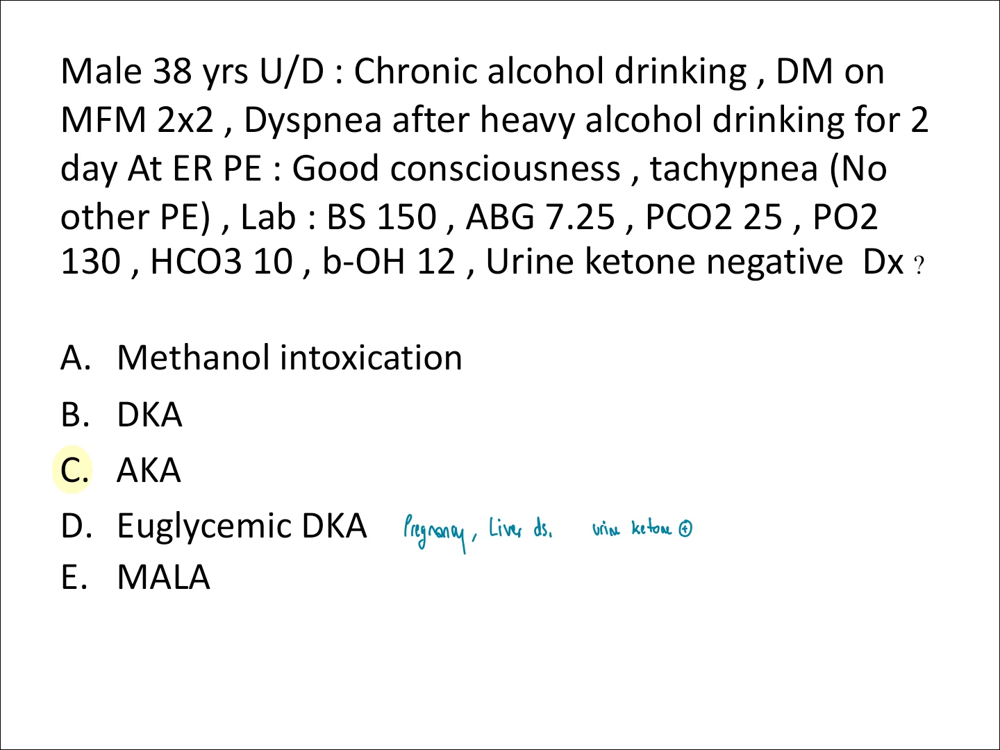
Test_for_AKA.pdf, source page image p.1
Extra A04 metabolic acidosis source item routed from Test_for_AKA page 1.
Reference: Source: Test_for_AKA.pdf | p.1
extra source?????????McGraw
Q10. A 50-year-old woman with ethanol abuse presents with confusion after not eating much for the past few days. Vitals: HR 102, BP 149/82, RR 24. She is disheveled and moderately confused. Exam shows no hyperreflexia or clonus. Labs include glucose 263 mg/dL, anion gap 22, and serum ketones. The poison center recommends which therapy?
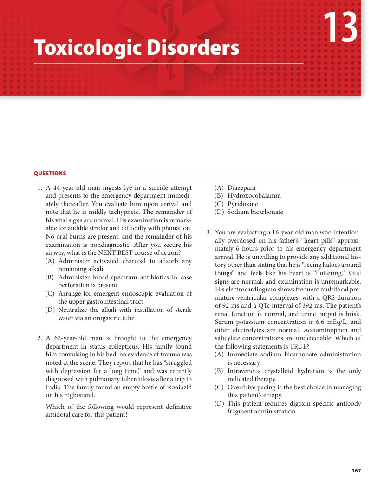
McGraw Chapter 13, source page image p.178
Extra A04 alcohol/metabolic source item routed from McGraw Chapter 13 page 178.
Q2. ชาย 40 ปี มาด้วยซึม GCS 7. Lab: Na 112, urine osmolality 30, urine sodium 7, serum osmolality 265. Which of the following is the most likely diagnosis?
MCQ 2566 combined.pdf, source page image p.9
Source file: MCQ 2566 combined.pdf | A. Thrombosis Renal artery
Reference: Source: MCQ 2566 combined.pdf | p.9
ข้อสอบเก่าโจทย์ล้วน
Q3. หญิง 27 ปี ปวดหัว ใจสั่น ปวดท้อง. PE: BP 200/100, HR 130, RR 20, O2 sat 99%, lung clear, fundoscopy: papilledema, neuro WNL. Abdomen soft, mild generalized tenderness. Lab: Na 145, K 3.5, HCO3 30. Dx?
MCQ 2566 combined.pdf, source page image p.11
Source file: MCQ 2566 combined.pdf | and trunk, scaly patches along skin line, Dx?
Q6. A 70-year-old woman with dementia presents with acute gastroenteritis, severe vomiting, profuse diarrhea, dehydration, tachycardia, and lethargy. Labs reveal sodium 165 mEq/L; prior sodium 3 months earlier was 150 mEq/L. She is admitted for IV fluid resuscitation and started on high-volume D5W. Twelve hours later, she becomes acutely unresponsive and requires intubation. Repeat sodium is 135. Based on this information, what is the diagnosis causing her change in mental status?
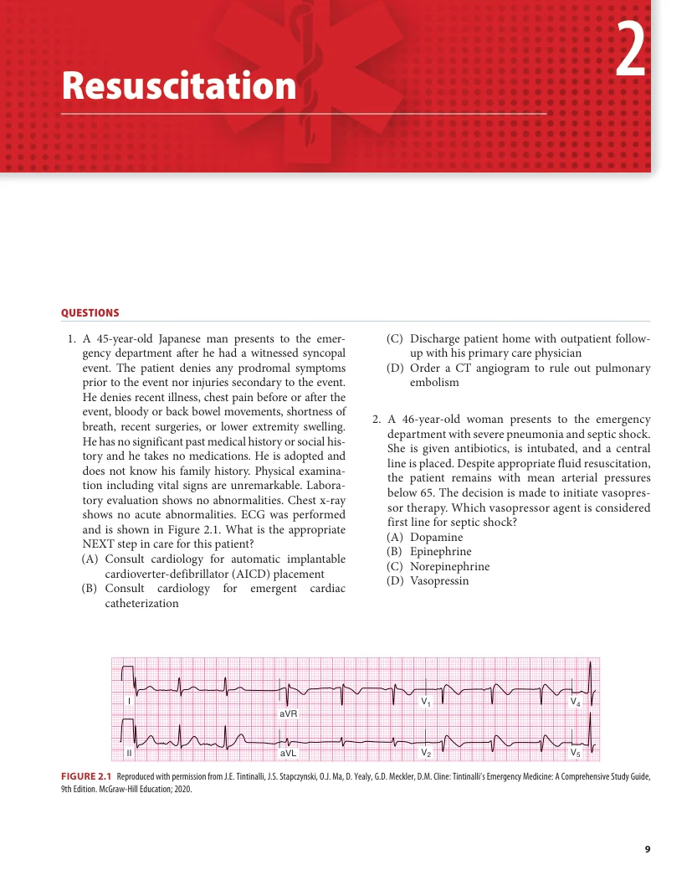
McGraw Chapter 2, source page image p.20
Extra A04 sodium/water source item routed from McGraw Chapter 2 page 20.
extra source?????????source-failure recoveryelectrolyte
Q7. ???? 72 ?? ?????? AOC. BT 37?C, P 100, BP 100/60, E3V4M5, DTR 2+. Lab: Na 160, K 5, Cl 105, HCO3 28. ??? free water deficit; ???????????? body weight ???????? ideal Na ???.
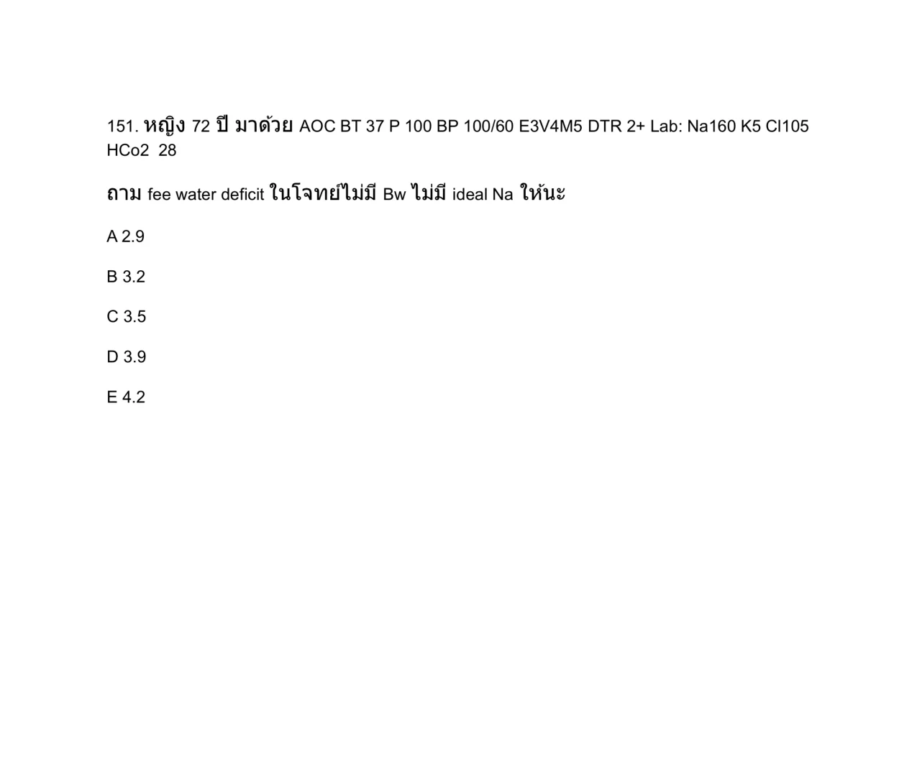
Test elyte imbalance-1.pdf, source page image p.1
Extra A04 sodium/free-water source item recovered from source-failure PDF page 1.
Reference: Source: Test elyte imbalance-1.pdf | p.1
Thyroid / Adrenal Emergencies
ข้อสอบเก่าโจทย์ล้วน
Q1. A 70-year-old female patient was diagnosed with hypothyroidism 3 years ago. She stopped taking medication due to the COVID-19 pandemic. She is presenting with drowsiness, edema on both legs and constipation for the past three days. Her vital signs are: body temperature 36.0°C, heart rate 52 bpm, respiratory rate 18, and blood pressure 110/60 mmHg. During physical examination, non-pitting edema was found on both legs. Her neurological exam shows E3V3M5, negative stiff neck, 3 mm RTLBE pupils, and no lateralizing signs. What is the best treatment for this patient?
MCQ 2566 combined.pdf, source page image p.11
Source file: MCQ 2566 combined.pdf | and trunk, scaly patches along skin line, Dx?
Q5. Known hyperthyroid ยังไม่รักษา มาด้วยไข้ ถ่ายเหลว ถาม management?
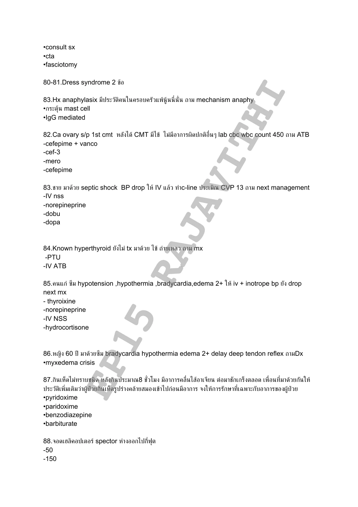
MCQ 2563 by EP15 Rajavithi.pdf, source page image p.18
Extra A04 endocrine source item recovered from EP15 page 18.
Reference: Source: MCQ 2563 by EP15 Rajavithi.pdf | p.18
extra sourceโจทย์ล้วน
Q6. คนแก่ ซึม hypotension, hypothermia, bradycardia, edema 2+. ให้ IV fluid + inotrope แล้ว BP ยัง drop. Next management?
MCQ 2563 by EP15 Rajavithi.pdf, source page image p.18
Extra A04 endocrine source item recovered from EP15 page 18.
Reference: Source: MCQ 2563 by EP15 Rajavithi.pdf | p.18
extra source?????????McGraw
Q7. A 52-year-old woman with rheumatoid arthritis currently on prednisone and naproxen presents with nausea, fatigue, and body aches for the past 4 days. She has been visiting family for the past 2 weeks but accidentally forgot to bring her medications. She notes a dry cough but denies fever, chest pain, or dyspnea. Vitals: HR 112, BP 80/52, SpO2 96% RA, RR 21, T 37.1?C. Which of the following lab abnormalities would you expect based on her suspected condition?
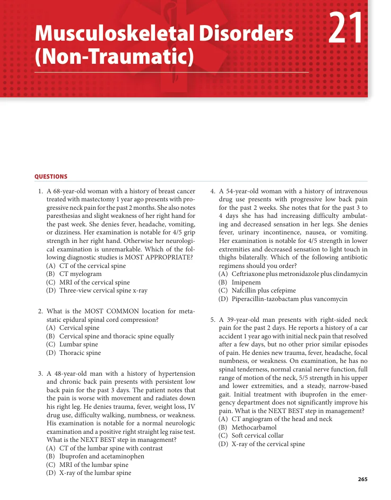
McGraw Chapter 21, source page image p.276
Extra A04 adrenal source item routed from McGraw Chapter 21 page 276.
extra source?????????source-failure recoveryHyperthyroid test
Q12. Female pregnancy 12 wk, known Graves disease, no treatment, presents with drowsiness, AF rate 160, lung clear, echo good EF. What is initial management?
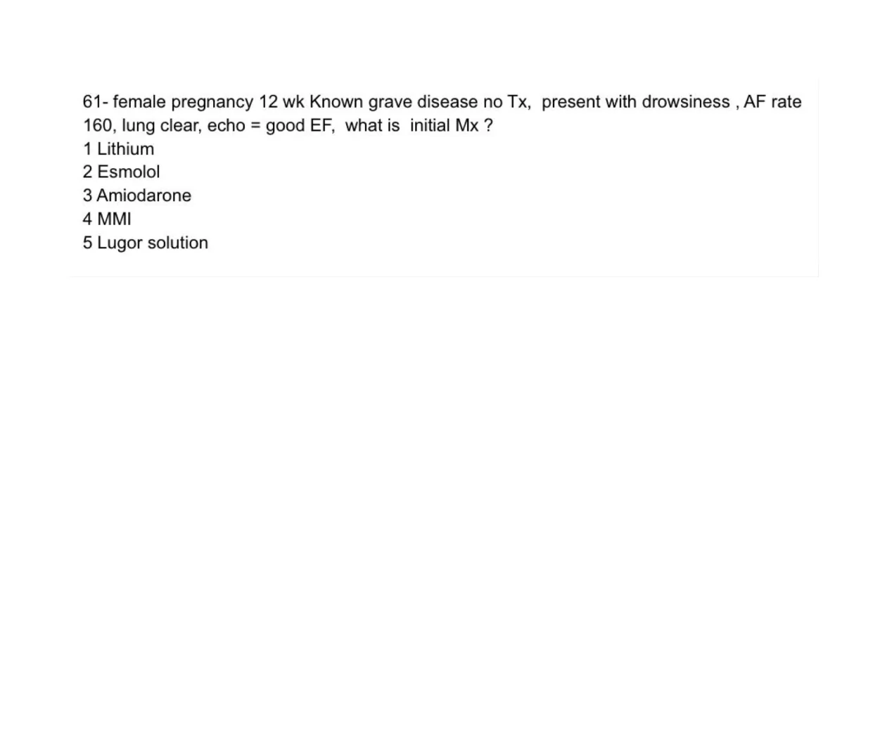
Hyperthyroid test.pdf, source page image p.1
Extra A04 hyperthyroid source item recovered from source-failure PDF page 1.
Reference: Source: Hyperthyroid test.pdf | p.1
extra source?????????source-failure recoveryHypothyroid test
Q20. A 70-year-old female patient was diagnosed with hypothyroidism 3 years ago. She stopped taking medication due to the COVID-19 pandemic. She is presenting with drowsiness, edema on both legs and constipation for the past three days. Vital signs: BT 36.0 C, HR 52 bpm, RR 18, BP 110/60 mmHg. Physical exam: non-pitting edema on both legs. Neurological exam E3V3M5, negative stiff neck, 3 mm RTLBE pupils, no lateralizing signs. What is the best treatment for this patient?
MCQ 2566 combined.pdf, source page image p.11
Extra A04 thyroid source item recovered from MCQ 2566 source page p.11; answers intentionally omitted.
Extra A04 hyperthyroid source item recovered from Hyperthyroid test.pdf page 3; answers intentionally omitted.
Reference: Source: Hyperthyroid test.pdf | p.3
extra sourceโจทย์ล้วนsource-failure recovery
Q24. A 45-year-old female was found unconscious and brought to the ED. Physical examination revealed BT 35.5 C, BP 71/48 mmHg, HR 59/min, RR 18/min, face and extremities edematous and non-pitting edema, dry cool slightly mottled and desquamated skin, sluggish eyes, decerebrate gestures, Babinski sign, DTX 104 mg%, ECG sinus bradycardia. CT brain normal. Which investigation is most useful further investigation?
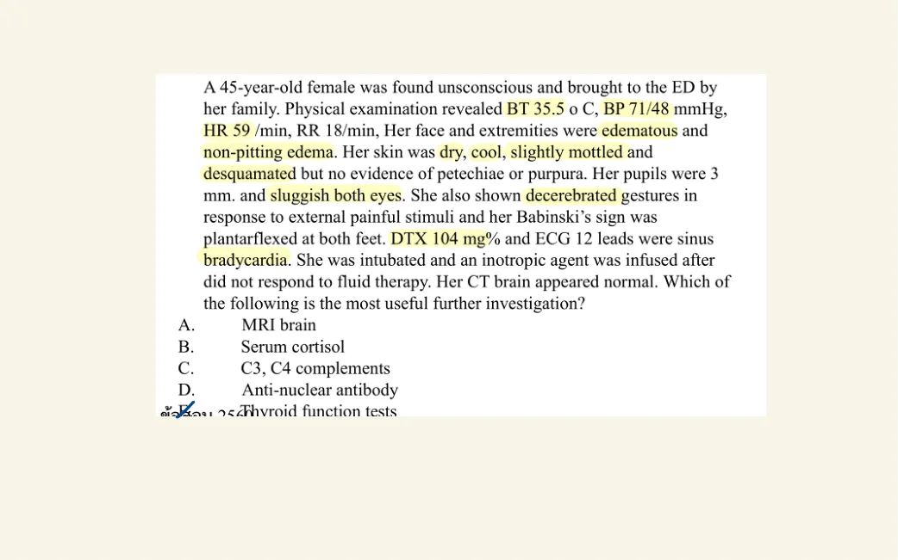
ข้อสอบ Hypothyroid.pdf, source page image p.3
Extra A04 hypothyroid/myxedema source item recovered from ข้อสอบ Hypothyroid.pdf page 3; answers intentionally omitted.
Extra A04 hypothyroid/myxedema source item recovered from ข้อสอบ Hypothyroid.pdf page 8; answers intentionally omitted.
Reference: Source: ข้อสอบ Hypothyroid.pdf | p.8
extra source?????????Endopdf
Q28. A 47-year-old Thai female with adrenal insufficiency taking prednisolone 10 mg/day presents with left ankle pain after a fall. Vitals are stable, ankle is swollen with full range of motion, and X-rays show no fracture. In addition to pain management, what is the appropriate adjustment for prednisolone?
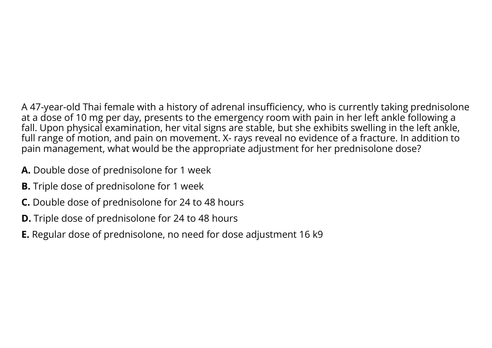
Endopdf.pdf, source page image p.29
Extra A04 source item recovered from Endopdf.pdf page 29; answers intentionally omitted.
Extra A04 source item recovered from Endopdf.pdf page 86; answers intentionally omitted.
Reference: Source: Endopdf.pdf | p.86
extra source?????????Endopdf
Q30. 45-year-old has 4 months of nonfocal generalized headache, BP 170/120, lab K 2.3, HCO3 elevated. Plasma renin activity is low and serum aldosterone is high. Which cause is most likely?
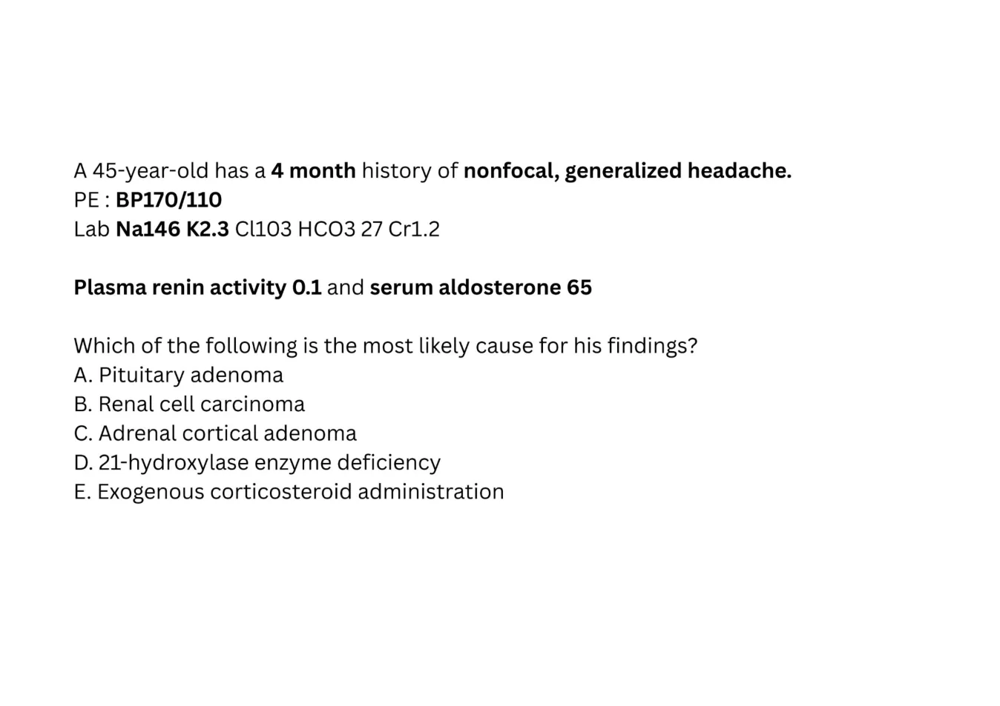
Endopdf.pdf, source page image p.90
Extra A04 source item recovered from Endopdf.pdf page 90; answers intentionally omitted.
Reference: Source: Endopdf.pdf | p.90
extra source?????????Endopdf
Q31. A 45-year-old man has episodic headache, whole-body sweating, palpitation, abdominal/back pain, BP 190/120, HR 112, moist palms, and sinus tachycardia. Which test is most likely to confirm diagnosis?
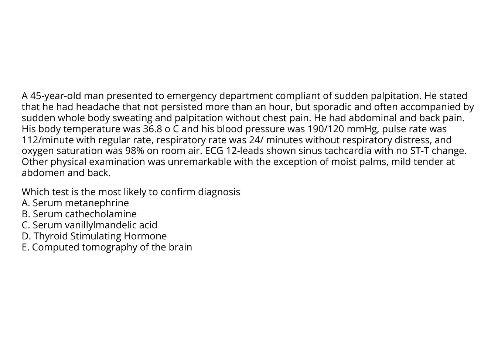
Endopdf.pdf, source page image p.127
Extra A04 source item recovered from Endopdf.pdf page 127; answers intentionally omitted.
Reference: Source: Endopdf.pdf | p.127
extra source?????????Endopdf
Q32. A 39-year-old woman with 4 days of diarrhea develops mood swings/confusion. She takes medication for a neck problem. BT 38.6, HR 140, BP 130/45, AF with normal QRS. After ABCs, most appropriate next step?
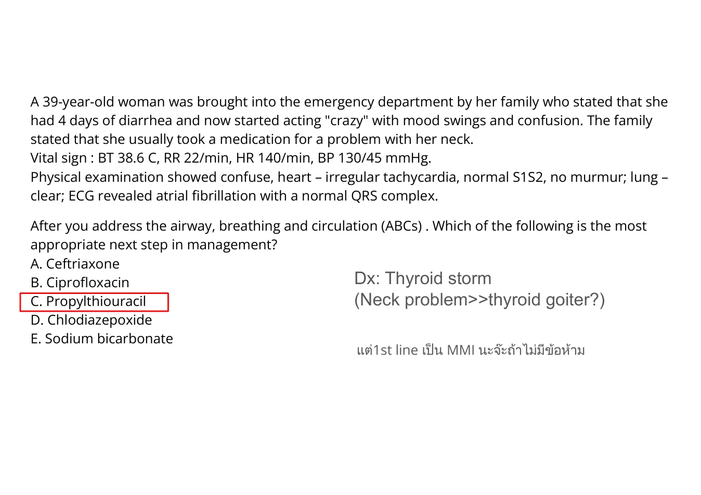
Endopdf.pdf, source page image p.130
Extra A04 source item recovered from Endopdf.pdf page 130; answers intentionally omitted.
Reference: Source: Endopdf.pdf | p.130
extra source?????????Endopdf
Q33. Patient with secondary adrenal insufficiency on prednisolone 5 mg/day comes to ER with fever, cough, hoarseness. Proper management?
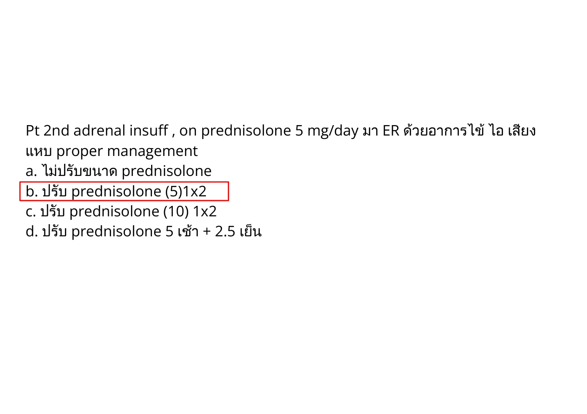
Endopdf.pdf, source page image p.133
Extra A04 source item recovered from Endopdf.pdf page 133; answers intentionally omitted.
Reference: Source: Endopdf.pdf | p.133
extra source?????????Endopdf
Q34. Patient with hyperthyroid stopped medication and presents with palpitations/weakness. TSH markedly low. After PTU 900 mg oral, which medication should be given after PTU within 30 minutes?
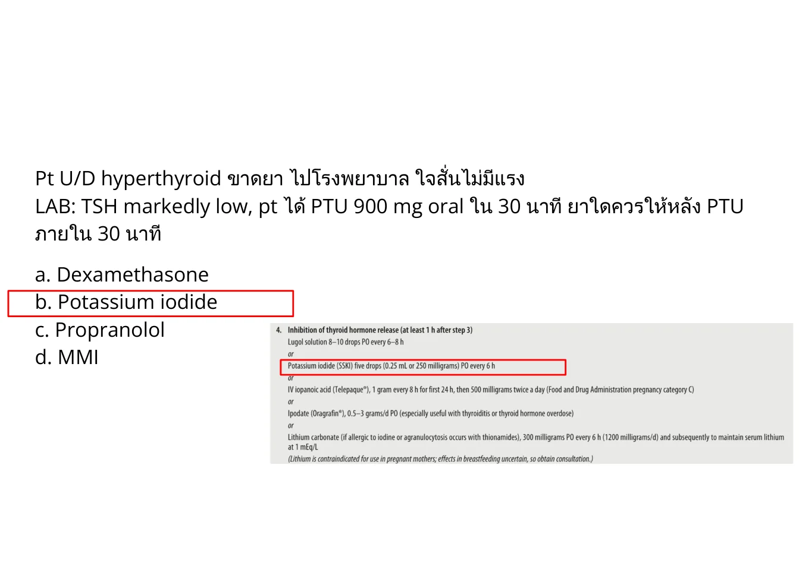
Endopdf.pdf, source page image p.136
Extra A04 source item recovered from Endopdf.pdf page 136; answers intentionally omitted.
Reference: Source: Endopdf.pdf | p.136
extra source?????????Endopdf
Q35. A Thai male 30-year-old with asthma presents with palpitation, fever, AF rate 160, agitation/confusion, exophthalmos, thyroid enlargement, lung crepitations, edema, TSH low, FT3/FT4 high. Which is the most appropriate management?
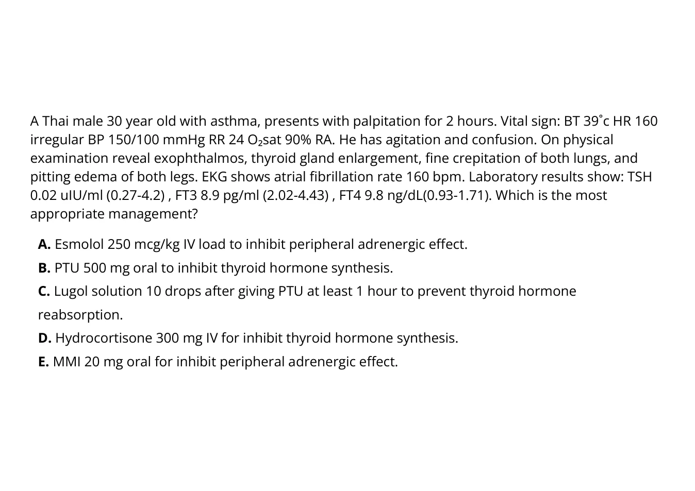
Endopdf.pdf, source page image p.138
Extra A04 source item recovered from Endopdf.pdf page 138; answers intentionally omitted.
Q2. A 70-year-old male presents with confusion, lethargy, and muscle weakness. PE: Temp 37?C, PR 120/min, RR 20/min, O2 sat 100%, BP 140/90 mmHg, heart and lung within normal findings. Laboratory results reveal serum calcium 14.5 mg/dL and serum creatinine 2.8 mg/dL. What is the most appropriate initial treatment?
Q3. A woman with acute lymphocytic leukemia presents shortly after a round of chemotherapy with the complaint of feeling unwell. She has a history of tumor lysis syndrome with previous chemotherapy, and you suspect that she may have this again. What is the most life-threatening abnormality that you might find on her laboratory studies?
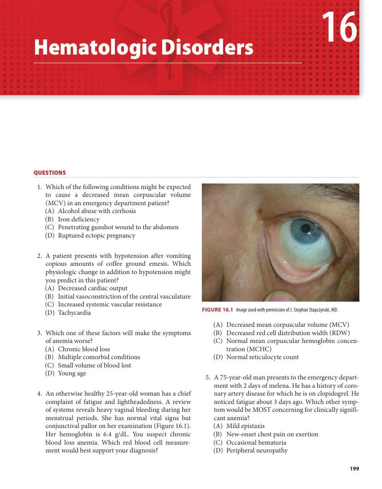
McGraw Chapter 16, source page image p.210
Extra A04 electrolyte/metabolic source item routed from McGraw Chapter 16 page 210.
Q4. A woman who is undergoing chemotherapy for breast cancer presents with confusion, poor appetite, nausea, and constipation. Her electrolytes show a calcium of 15 mg/dL. She has no history of cardiac or renal insufficiency. What is the most appropriate initial treatment in the emergency department?
McGraw Chapter 16, source page image p.210
Extra A04 calcium/metabolic source item routed from McGraw Chapter 16 page 210.
Q3. A 22-year-old man with type 1 diabetes being treated with an insulin pump presents to the emergency department with altered mental status and blood glucose of 30 mg/dL. What should be done with the insulin pump while he is getting treated with IV glucose for hypoglycemia and what is the rationale?
McGraw Chapter 15, source page image p.202
Source file: McGraw Chapter 15: Endocrine, Metabolic, and Nutritional Disorders
Q4. A 5-year-old boy with type 1 diabetes mellitus presents to the emergency department due to altered mental status. His diabetes is treated with an insulin pump. Vital signs are T 37.2°C, BP 112/72, HR 95, RR 14, and SpO2 100% RA. Point-of-care glucose is 300 mg/dL. Arterial blood gas shows a pH of 7.12. Glucose and ketones are present in his urine dipstick. The patient has an anion gap of 16. What is the APPROPRIATE INITIAL STEP in the management for this patient?
McGraw Chapter 15, source page image p.202
Source file: McGraw Chapter 15: Endocrine, Metabolic, and Nutritional Disorders
Q5. A 45-year-old woman with no known medical problems presents to the emergency department with symptoms of blurry vision, polyuria, and polydipsia. Her plasma glucose level is 205 mg/dL. What is the MOST LIKELY underlying cause of this patient’s condition?
McGraw Chapter 15, source page image p.202
Source file: McGraw Chapter 15: Endocrine, Metabolic, and Nutritional Disorders
Q6. A 40-year-old woman presents to the emergency department with several weeks of blurry vision, polyuria, and polydipsia. Her plasma glucose on chemistry panel is 400 mg/dL. You would like to start her on metformin upon discharge. What lab value must you check before prescribing this medication?
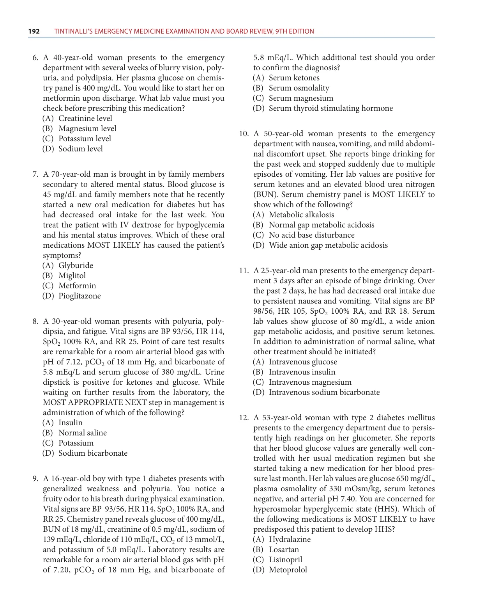
McGraw Chapter 15, source page image p.203
Source file: McGraw Chapter 15: Endocrine, Metabolic, and Nutritional Disorders
Q7. A 70-year-old man is brought in by family members secondary to altered mental status. Blood glucose is 45 mg/dL and family members note that he recently started a new oral medication for diabetes but has had decreased oral intake for the last week. You treat the patient with IV dextrose for hypoglycemia and his mental status improves. Which of these oral medications MOST LIKELY has caused the patient’s symptoms?
McGraw Chapter 15, source page image p.203
Source file: McGraw Chapter 15: Endocrine, Metabolic, and Nutritional Disorders
Q8. A 30-year-old woman presents with polyuria, polydipsia, and fatigue. Vital signs are BP 93/56, HR 114, SpO2 100% RA, and RR 25. Point of care test results are remarkable for a room air arterial blood gas with pH of 7.12, pCO2 of 18 mm Hg, and bicarbonate of 5.8 mEq/L and serum glucose of 380 mg/dL. Urine dipstick is positive for ketones and glucose. While waiting on further results from the laboratory, the MOST APPROPRIATE NEXT step in management is administration of which of the following?
McGraw Chapter 15, source page image p.203
Source file: McGraw Chapter 15: Endocrine, Metabolic, and Nutritional Disorders
Q9. A 16-year-old boy with type 1 diabetes presents with generalized weakness and polyuria. You notice a fruity odor to his breath during physical examination. Vital signs are BP 93/56, HR 114, SpO2 100% RA, and RR 25. Chemistry panel reveals glucose of 400 mg/dL, BUN of 18 mg/dL, creatinine of 0.5 mg/dL, sodium of 139 mEq/L, chloride of 110 mEq/L, CO2 of 13 mmol/L, and potassium of 5.0 mEq/L. Laboratory results are remarkable for a room air arterial blood gas with pH of 7.20, pCO2 of 18 mm Hg, and bicarbonate of 5.8 mEq/L. Which additional test should you order to confirm the diagnosis?
McGraw Chapter 15, source page image p.203
Source file: McGraw Chapter 15: Endocrine, Metabolic, and Nutritional Disorders
Q10. A 50-year-old woman presents to the emergency department with nausea, vomiting, and mild abdominal discomfort. She reports binge drinking for the past week and stopped suddenly due to multiple episodes of vomiting. Her lab values are positive for serum ketones and an elevated blood urea nitrogen (BUN). Serum chemistry panel is MOST LIKELY to show which of the following?
McGraw Chapter 15, source page image p.203
Source file: McGraw Chapter 15: Endocrine, Metabolic, and Nutritional Disorders
Q11. A 25-year-old man presents to the emergency department 3 days after an episode of binge drinking. Over the past 2 days, he has had decreased oral intake due to persistent nausea and vomiting. Vital signs are BP 98/56, HR 105, SpO2 100% RA, and RR 18. Serum lab values show glucose of 80 mg/dL, a wide anion gap metabolic acidosis, and positive serum ketones. In addition to administration of normal saline, what other treatment should be initiated?
McGraw Chapter 15, source page image p.203
Source file: McGraw Chapter 15: Endocrine, Metabolic, and Nutritional Disorders
Q12. A 53-year-old woman with type 2 diabetes mellitus presents to the emergency department due to persistently high readings on her glucometer. She reports that her blood glucose values are generally well controlled with her usual medication regimen but she started taking a new medication for her blood pressure last month. Her lab values are glucose 650 mg/dL, plasma osmolality of 330 mOsm/kg, serum ketones negative, and arterial pH 7.40. You are concerned for hyperosmolar hyperglycemic state (HHS). Which of the following medications is MOST LIKELY to have predisposed this patient to develop HHS?
McGraw Chapter 15, source page image p.203
Source file: McGraw Chapter 15: Endocrine, Metabolic, and Nutritional Disorders
Q13. A 30-year-old woman presents to the emergency department with facial features as well as hair loss and weight gain (Figure 15.1). Which of the following would you also expect to find on physical examination?
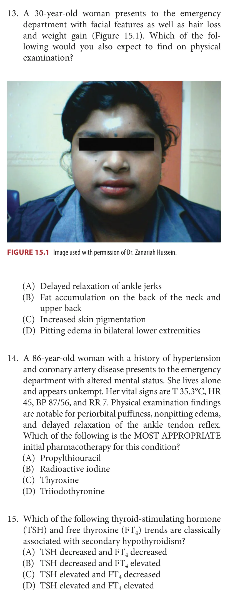
McGraw Figure 15.1
Source file: McGraw Chapter 15: Endocrine, Metabolic, and Nutritional Disorders
Q14. An 86-year-old woman with a history of hypertension and coronary artery disease presents to the emergency department with altered mental status. She lives alone and appears unkempt. Her vital signs are T 35.3°C, HR 45, BP 87/56, and RR 7. Physical examination findings are notable for periorbital puffiness, nonpitting edema, and delayed relaxation of the ankle tendon reflex. Which of the following is the MOST APPROPRIATE initial pharmacotherapy for this condition?
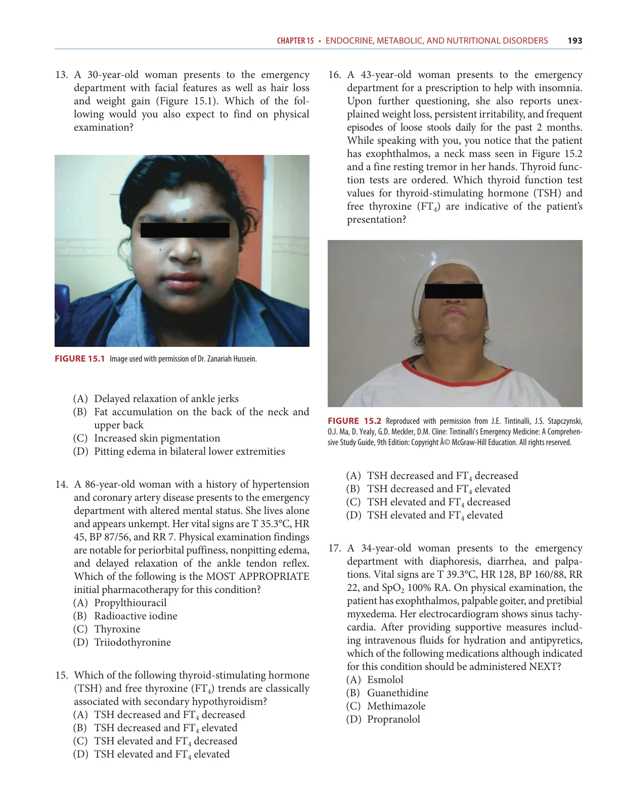
McGraw Chapter 15, source page image p.204
Source file: McGraw Chapter 15: Endocrine, Metabolic, and Nutritional Disorders
Q15. Which of the following thyroid-stimulating hormone (TSH) and free thyroxine (FT4) trends are classically associated with secondary hypothyroidism?
McGraw Chapter 15, source page image p.204
Source file: McGraw Chapter 15: Endocrine, Metabolic, and Nutritional Disorders
Q16. A 43-year-old woman presents to the emergency department for a prescription to help with insomnia. Upon further questioning, she also reports unexplained weight loss, persistent irritability, and frequent episodes of loose stools daily for the past 2 months. While speaking with you, you notice that the patient has exophthalmos, a neck mass seen in Figure 15.2 and a fine resting tremor in her hands. Thyroid function tests are ordered. Which thyroid function test values for thyroid-stimulating hormone (TSH) and free thyroxine (FT4) are indicative of the patient’s presentation?
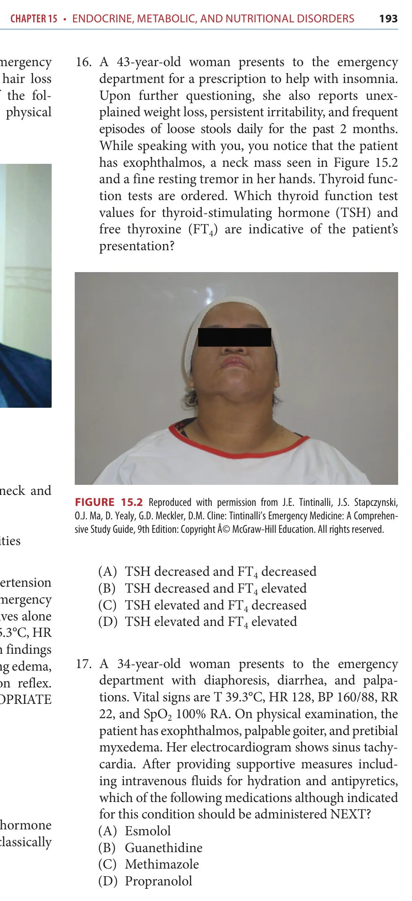
McGraw Figure 15.2
Source file: McGraw Chapter 15: Endocrine, Metabolic, and Nutritional Disorders
Q17. A 34-year-old woman presents to the emergency department with diaphoresis, diarrhea, and palpitations. Vital signs are T 39.3°C, HR 128, BP 160/88, RR 22, and SpO2 100% RA. On physical examination, the patient has exophthalmos, palpable goiter, and pretibial myxedema. Her electrocardiogram shows sinus tachycardia. After providing supportive measures including intravenous fluids for hydration and antipyretics, which of the following medications although indicated for this condition should be administered NEXT?
McGraw Chapter 15, source page image p.204
Source file: McGraw Chapter 15: Endocrine, Metabolic, and Nutritional Disorders
Q19. A 62-year-old man presents to the emergency department with hypotension, fever, and cough. He has a past medical history significant for chronic obstructive pulmonary disease (COPD). He is a frequent visitor to the emergency department for COPD exacerbations and was just discharged from the hospital last week. You diagnose him with pneumonia and arrange admission to the hospital. The patient is febrile and persistently hypotensive despite two fluid boluses and timely initiation of antibiotics. Which of the following medications may improve the patient’s blood pressure?
McGraw Chapter 15, source page image p.205
Source file: McGraw Chapter 15: Endocrine, Metabolic, and Nutritional Disorders
Q20. A 40-year-old man with lymphoma, who is currently undergoing chemotherapy, is sent to the emergency department for persistent hypotension. He otherwise feels well and denies fever, cough, or dysuria. The patient’s oncologist is concerned about primary adrenal insufficiency. What values on the serum chemistry panel are consistent with this diagnosis?
McGraw Chapter 15, source page image p.205
Source file: McGraw Chapter 15: Endocrine, Metabolic, and Nutritional Disorders
Q1. ??????????? ????????????? 4 ??? ??????????????? proximal muscle weakness. Lab: Na 140, K 2.8, Cl 101, HCO3 16, urine K 8. ??? Dx?
MCQ 2563 by EP15 Rajavithi.pdf, source page image p.1
Extra A04 electrolyte source item routed from EP15 page 1.
Reference: Source: MCQ 2563 by EP15 Rajavithi.pdf | p.1
extra source?????????McGraw
Q2. A 48-year-old woman presents in respiratory distress with myasthenia crisis. She is intubated using RSI with etomidate and succinylcholine. After medication administration, she goes into cardiac arrest and expires despite resuscitation. Which adverse medication reaction from the RSI medications most likely resulted in cardiac arrest?
McGraw Chapter 2, source page image p.20
Extra A04 potassium/electrolyte source item routed from McGraw Chapter 2 page 20.
Q1. A 15-year-old girl presents to the emergency department with her parents for generalized weakness and weight loss. She has a history of bulimia and admits to routinely purging after she eats. Which of the following abnormalities would you most expect to find on her electrocardiogram?
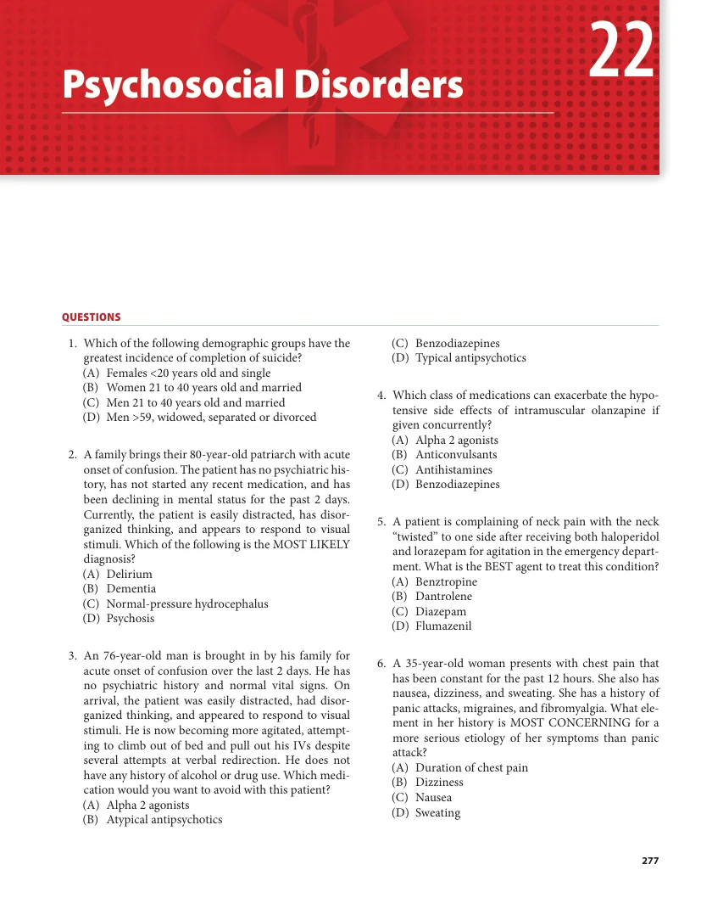
McGraw Chapter 22, source page image p.288
Extra A04 nutrition/electrolyte source item routed from McGraw Chapter 22 page 288.
Q3. A 60-year-old woman presents with slurred speech and inability to ambulate. Family states she is a serious alcoholic and has recently become unable to recall even basic recent events, while long-term memory appears preserved. Exam is remarkable for ataxia, slurred speech, paralysis of extraocular movements with lateral gaze, and confusion without delirium. Vitals are normal and there is no hyperreflexia or clonus. This patient is suffering from which condition?
McGraw Chapter 13, source page image p.178
Extra A04 nutrition/vitamin source item routed from McGraw Chapter 13 page 178.
Q5. Male 59 yr with underlying AF and thyroid disease. 30 min PTA syncope; complains of weakness and DOE for several weeks. V/S stable, moderate pale conjunctiva, no hepatosplenomegaly, neuro: unstable gait. Lab: Hb 7, Hct 21, WBC 1,600, platelet 80,000. PBS shown. Diagnosis?
MCQ 2024 source page p.16, question 200
Extra A04 nutrition/vitamin metabolic source item recovered from MCQ 2024 source page p.16; answers intentionally omitted.
Q6. 55 yr with pulmonary TB taking TB medications for a few weeks presents with generalized tonic-clonic seizures and does not regain consciousness after seizure. Which medication should be given?
MCQ 2024 source page p.16, question 109
Extra A04 vitamin/medication-related metabolic source item recovered from MCQ 2024 source page p.16; answers intentionally omitted.
Q7. A 7-month-old boy with known ornithine transcarbamylase deficiency presents to the emergency department with lethargy. Parents state that he started having vomiting and diarrhea today, with poor oral intake. On examination, the infant is pale with dry mucous membranes, responds only to painful stimuli, has tachycardia, and has a sluggish pupillary response. What is the MOST IMPORTANT laboratory examination for the resuscitation?
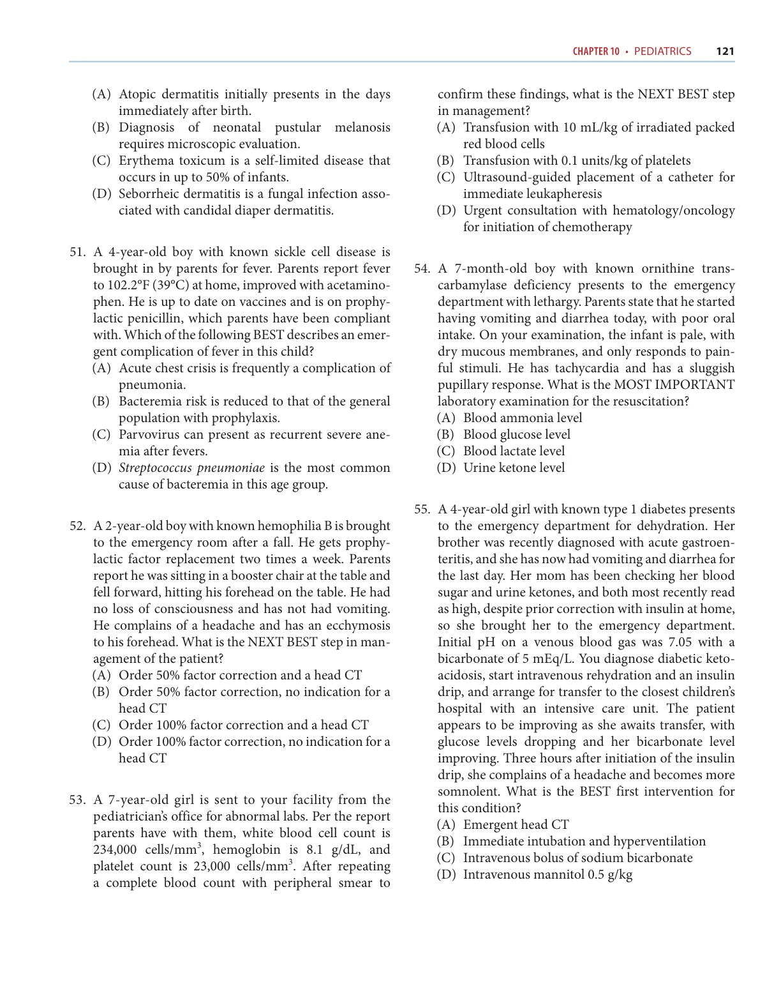
McGraw Chapter 10, source page image p.132
Extra A04 pediatric metabolic crisis source item routed from McGraw Chapter 10 page 132; answers intentionally omitted.
Q3. A 4-year-old girl with known type 1 diabetes presents with dehydration after vomiting and diarrhea. Blood sugar and urine ketones are high despite correction with insulin at home. Initial venous pH is 7.05 with bicarbonate 5 mEq/L. She is diagnosed with DKA, started on IV rehydration and insulin drip, and awaits transfer. Three hours after insulin drip begins, glucose and bicarbonate are improving, but she develops headache and becomes more somnolent. What is the BEST first intervention for this condition?
McGraw Chapter 10, source page image p.132
Extra A04 pediatric DKA complication source item routed from McGraw Chapter 10 page 132; answers intentionally omitted.
Extra A04 DKA source item recovered from DKA test.pdf page 3; answers intentionally omitted.
Reference: Source: DKA test.pdf | p.3
extra source?????????Endopdf
Q5. A 54-year-old woman with diabetes mellitus presents with confusion and seizure. Glucose 950, BUN 40, Na 119, K 5, HCO3 about 19-20, pH 7.35, dry lips/tongue, no focal neurologic signs. What is the next appropriate management?
Endopdf.pdf, source page image p.110
Extra A04 source item recovered from Endopdf.pdf page 110; answers intentionally omitted.
Reference: Source: Endopdf.pdf | p.110
extra source?????????Endopdf
Q6. A 35-year-old woman presents with exhaustion, HR 120, glucose 783, pH 7.1, K 5.7, bicarbonate 6, serum ketones positive. Most appropriate management?
Endopdf.pdf, source page image p.141
Extra A04 source item recovered from Endopdf.pdf page 141; answers intentionally omitted.
Reference: Source: Endopdf.pdf | p.141
Sodium / Water / Osmolality
extra source?????????cross-routed source
Q2. 36 ?? ICH on ETT E1M1VT, CBC normal, Na 130, K 4, Cl 101, HCO3 21, serum osmolality 320, BS 98, Cr 1.2, BUN 20. ???????????????????????? (?????????????? ???????? hyponatremia)
MCQ 2024 source page p.17, question 136
Extra A04 sodium/osmolality source item recovered from MCQ 2024 source page p.17; answers intentionally omitted.
Q3. A 19-year-old man is brought in by friends from a rave. Friends report that he had a generalized tonic-clonic seizure at the party after doing a lot of Ecstasy and dancing hard. He is postictal, with respiratory rate 22, no signs of trauma, urinary incontinence, and a small anterior tongue abrasion. Which laboratory study is MOST LIKELY to be significantly abnormal?
McGraw Chapter 13, source page image p.180
Extra A04 sodium/electrolyte source item cross-routed from McGraw Chapter 13 page 180; answers intentionally omitted.
Q4. ??? 60 ???? lethargy, edema and labs: Na 120, K 4.0, BUN/Cr not elevated, urine Na 50, urine osm 343. Diagnosis?
Endopdf.pdf, source page image p.72
Extra A04 source item recovered from Endopdf.pdf page 72; answers intentionally omitted.
Reference: Source: Endopdf.pdf | p.72
extra source?????????Endopdf
Q5. A 55-year-old woman has weight loss, decreased mentation, papilledema, diffuse cerebral edema, Na 108, K 4, Cl 83, CO2 14, glucose 82, creatinine 0.5. Which cause is most likely?
Endopdf.pdf, source page image p.115
Extra A04 source item recovered from Endopdf.pdf page 115; answers intentionally omitted.
Reference: Source: Endopdf.pdf | p.115
extra source?????????Endopdf
Q6. A 24-year-old woman runs a marathon and replaces all volume lost in sweat by drinking distilled water. After the marathon, she will have which change?
Endopdf.pdf, source page image p.129
Extra A04 source item recovered from Endopdf.pdf page 129; answers intentionally omitted.
Reference: Source: Endopdf.pdf | p.129
Calcium / Phosphate / Metabolic Bone
extra source?????????Endopdf
Q1. A 58-year-old man with diabetes has bone pain of hands. Labs: creatinine 7.8, calcium 7.8, phosphorus 5.7, albumin 4.0. Which condition is most likely?
Endopdf.pdf, source page image p.117
Extra A04 source item recovered from Endopdf.pdf page 117; answers intentionally omitted.
Reference: Source: Endopdf.pdf | p.117
extra source?????????Endopdf
Q2. A 49-year-old woman has recurrent lower abdominal pain and urinary tract stones, pain in left index finger/metacarpal mass. Labs: calcium 13.7, phosphorus 1.9, creatinine 1.1, albumin 4.8. Which bone lesion is most likely?
Endopdf.pdf, source page image p.119
Extra A04 source item recovered from Endopdf.pdf page 119; answers intentionally omitted.
Reference: Source: Endopdf.pdf | p.119
Added From Solution Ready
Rows from solution_ready_by_special that were not confidently matched to the original special page. Answer and rationale are included.
A 47-year-old Thai female with a history of adrenal insufficiency, who is currently taking prednisolone at a dose of 10 mg per day, presents to the emergency room with pain in her left ankle following a fall. Upon physical examination, her vital signs are stable, but she exhibits swelling in the left ankle, full range of motion, and pain on movement. X-rays reveal no evidence of a fracture. In addition to pain management, what would be the appropriate adjustment for her prednisolone dose?
crop
ยังไม่ถูก
A. Double dose of prednisolone for 1 week
ยังไม่ถูก
B. Triple dose of prednisolone for 1 week
ถูกต้อง
Minor injury without fracture or instability is a mild physiologic stress; short temporary doubling is appropriate.
ยังไม่ถูก
D. Triple dose of prednisolone for 24 to 48 hours
ยังไม่ถูก
E. Regular dose of prednisolone, no need for dose adjustment
Female 56y, DM, HT, IHD, Hypothyroid ขาดยา มาด้วย weakness and fatigue, slow speech ปกติจะ active ดี ลูกสาวบอกว่าขาดยามา 2 วัน BT 35.5, PR 56, BP 95/61, drowsiness, E3V4M6 motor power gr IV all, DTR - prolong relaxation phase of knee jerk ถาม Initial management?
crop
ถูกต้อง
Suspected myxedema coma should receive stress-dose hydrocortisone before/with thyroid hormone because adrenal insufficiency can coexist.
Male 38 year old chronic alc. Drinking, DM on MFM 2x2, dyspnea after heavy drinking for 2 day, At ER PE: good consciousness, tachypnea (ไม่ได้ตรวจร่างกายอื่น) lab BS 150, ABG 7.25, PCO2 25, PO2 130, HCO3 10, b-OH 12, urine ketone neg Dx? 1. Methanol intox 2. DKA 3. AKA 4. Euglycemic DKA 5. MALA
A 60-year-old woman was brought into the ED by her family who stated that she had been weak, lethargic, and saying "crazy things" over the last 2 days. Her family also stated that her medical history was significant only for a disease of her thyroid. Vital signs: BT 34 C, HR 51/min, RR 12/min, BP 120/90 mmHg. On examination, the patient was overweight, her skin was dry, and you noticed periorbital edema. On neurologic examination, the patient did not respond to stimulation. Which of the following is the most likely diagnosis?
crop
ยังไม่ถูก
A. Acute stroke
ยังไม่ถูก
B. Schizophrenia
ยังไม่ถูก
C. Grave's disease
ถูกต้อง
Hypothermia, bradycardia, dry skin, periorbital edema and coma in thyroid disease are classic myxedema coma.
A 54-year-old woman with diabetes mellitus present to the ED with confusion and seizure for twodays. Her seizure has already stop at ED. Her vital signs are BT 37.5 C, RR 18/min, HR 100/min, BP 98/55 mmHg. She had dry lips and tongue, confuse without focal neurological signs. The laboratory reveal blood sugar of 950, BUN 40 mg/dL, Na 119 mmol/L, K 5 mmol/L, Cl 92 mmol/L, NaHCO3 20 mmol/L. Arterial blood gas show pH 7.35, pCO2 40, HCO3 19 mmol/L, pO2 80. Her body weight is 60 kg.
What is the next appropriate management?
crop
ยังไม่ถูก
A. 3% NaCl
ยังไม่ถูก
B. phenytoin
ถูกต้อง
This is hyperosmolar hyperglycemic state with dehydration and seizures/confusion; initial therapy is isotonic saline bolus before insulin.
A 24-year-old woman with Graves' disease present to ED with three days of high grade fever and dysuria. She is now mildly agitated after vomit 10 times prior to hospital. She is pregnant with a gestational age of 10 weeks. She did not take thyroid medication during the past 9 months. Her vital were BT 39.5 C, RR 28/min, HR 140/min irregular, BP 130/80 mmHg.
What should be given first for the management?
crop
ถูกต้อง
After ABCs, thyroid storm management begins with beta blockade for adrenergic symptoms/rate control, followed by thionamide and iodine in sequence.
A 55-year-old woman has had a 4 kg weight loss over the past 3 months. She exhibits decreased mentation over the past 10 days. On physical examination she is afebrile and hypotensive. Bilateral papilledema is noted. A head CT scan shows marked diffuse cerebral edema with effacement of the lateral ventricles. Laboratory studies show a sodium of 108 mmol/L, potassium 4.0 mmol/L, chloride 83 mmol/L, CO2 14 mmol/L, glucose 82 mg/dL, and creatinine 0.5 mg/dL.
Which of the following is most likely to cause these findings?
crop
ยังไม่ถูก
A. Meningitis
ยังไม่ถูก
B. Blunt head trauma
ยังไม่ถูก
C. Hypothalamic glioma
ยังไม่ถูก
D. Pituitary macroadenoma
ถูกต้อง
Severe SIADH with hyponatremic cerebral edema and weight loss is classically caused by ectopic ADH from small cell lung carcinoma.
A 58-year-old man with a history of diabetes mellitus has noted the presence of bone pain, especially of his hands, for the past 6 months. On physical examination there is no swelling or redness of his hands, no joint deformity, but the range of motion is slightly decreased. Laboratory studies show sodium 139 mmol/L, potassium 4.0 mmol/L, chloride 98 mmol/L, CO2 22 mmol/L, glucose 153 mg/dL, creatinine 7.8 mg/dL, calcium 7.8 mg/dL, phosphorus 5.7 mg/dL, total protein 6.2 g/dL, and albumin 4.0 g/dL.
Which of the following conditions is this man most likely to have?
crop
ยังไม่ถูก
A. Adrenal adenoma
ยังไม่ถูก
B. Pituitary adenoma
ถูกต้อง
CKD with high phosphate, low calcium and bone pain suggests secondary hyperparathyroidism due to parathyroid hyperplasia.
A 49-year-old woman has had multiple episodes of lower abdominal pain for the past year. On 3 occasions she passed a urinary tract stone during or following an episode of pain. During the past month she has had pain in her left index finger. On physical examination there is pain on palpation mass of her left 4th metacarpal bone. Laboratory studies show a serum calcium of 13.7 mg/dL, phosphorus of 1.9 mg/dL, creatinine 1.1 mg/dL, and albumin 4.8 g/dL. Image of hand x-ray shown.
Which of the following bone lesions is she most likely to have?
crop
ยังไม่ถูก
A. Osteoporosis
ยังไม่ถูก
B. Osteomyelitis
ยังไม่ถูก
C. Osteoid osteoma
ยังไม่ถูก
D. Osteochondroma
ถูกต้อง
Hypercalcemia, hypophosphatemia, kidney stones and lytic hand lesion in hyperparathyroidism indicate osteitis fibrosa cystica.
A 45-year-old female was found unconscious and brought to the ED by her family. Physical examination revealed BT 35.5 C, BP 71/48 mmHg, HR 59/min, RR 18/min. Her face and extremities were edematous and non-pitting edema. Her skin was dry, cool, slightly mottled and desquamated but no evidence of petechiae or purpura. Her pupils were 3 mm and sluggish both eyes. She also shown decerebrated gestures in response to external painful stimuli and her Babinski's sign was plantar flexed at both feet. DTX 104 mg% and ECG 12 leads were sinus bradycardia. She was intubated and an inotropic agent was infused after did not respond to fluid therapy. Her CT brain appeared normal.
Which of the following is the most useful further investigation?
crop
ยังไม่ถูก
A. MRI brain
ยังไม่ถูก
B. Serum cortisol
ยังไม่ถูก
C. C3, C4 complements
ยังไม่ถูก
D. Anti-nuclear antibody
ถูกต้อง
The presentation is most suspicious for myxedema coma; thyroid function testing is the most useful confirmatory investigation.
A 45-year-old man presented to emergency department compliant of sudden palpitation. He stated that he had headache that not persisted more than an hour, but sporadic and often accompanied by sudden whole body sweating and palpitation without chest pain. He had abdominal and back pain. His body temperature was 36.8 C and his blood pressure was 190/120 mmHg, pulse rate was 112/minute with regular rate, respiratory rate was 24/minutes without respiratory distress, and oxygen saturation was 98% on room air. ECG 12-leads shown sinus tachcardia with no ST-T change. Other physical examination was unremarkable with the exception of moist palms, mild tender at abdomen and back.
Which test is the most likely to confirm diagnosis
crop
ถูกต้อง
Plasma/serum metanephrines are the preferred biochemical test for pheochromocytoma.
A 39-year-old woman was brought into the emergency department by her family who stated that she had 4 days of diarrhea and now started acting "crazy" with mood swings and confusion. The family stated that she usually took a medication for a problem with her neck. Vital sign: BT 38.6 C, RR 22/min, HR 140/min, BP 130/45 mmHg. Physical examination showed confuse, heart - irregular tachycardia, normal S1S2, no murmur; lung - clear; ECG revealed atrial fibrillation with a normal QRS complex.
After you address the airway, breathing and circulation (ABCs). Which of the following is the most appropriate next step in management?
crop
ยังไม่ถูก
A. Ceftriaxone
ยังไม่ถูก
B. Ciprofloxacin
ถูกต้อง
Thyroid storm after ABCs needs thionamide therapy; PTU is preferred in storm because it blocks synthesis and peripheral conversion.
Pt 2nd adrenal insuff, on prednisolone 5 mg/day มา ER ด้วยอาการไข้ ไอ เสียงแหบ proper management
crop
ยังไม่ถูก
A. ไม่ปรับขนาด prednisolone
ถูกต้อง
Secondary adrenal insufficiency with minor febrile illness should use sick-day dose escalation; doubling prednisolone from 5 mg daily to 5 mg twice daily is the best listed choice.
Secondary adrenal insufficiency with minor febrile illness should use sick-day dose escalation; doubling prednisolone from 5 mg daily to 5 mg twice daily is the best listed choice.
A Thai male 30 year old with asthma, presents with palpitation for 2 hours. Vital sign: BT 39 C HR 160 irregular BP 150/100 mmHg RR 24 O2sat 90% RA. He has agitation and confusion. On physical examination reveal exophthalmos, thyroid gland enlargement, fine crepitation of both lungs, and pitting edema of both legs. EKG shows atrial fibrillation rate 160 bpm. Laboratory results show: TSH 0.02 uIU/ml (0.27-4.2), FT3 8.9 pg/ml (2.02-4.43), FT4 9.8 ng/dL (0.93-1.71). Which is the most appropriate management?
crop
ยังไม่ถูก
A. Esmolol 250 mcg/kg IV load to inhibit peripheral adrenergic effect.
ถูกต้อง
In thyroid storm with asthma/pulmonary congestion, beta blockade is risky; PTU is the best listed core therapy.
ยังไม่ถูก
C. Lugol solution 10 drops after giving PTU at least 1 hour to prevent thyroid hormone reabsorption.
ยังไม่ถูก
D. Hydrocortisone 300 mg IV for inhibit thyroid hormone synthesis.
ยังไม่ถูก
E. MMI 20 mg oral for inhibit peripheral adrenergic effect.
A 35-year-old woman arrives at the emergency department (ED) complaining of exhaustion. She is completely cognizant and denies using illegal substances, smoking, or drinking alcohol. Her heart rate is 120 bpm, her blood pressure is 120/70 mm Hg, and she is afebrile. There are no significant physical examination findings. Her blood glucose level is 783 mg/dL; she had lunch two hours ago. The sodium level is within normal ranges, the arterial pH is 7.1, the potassium level is 5.7 mEq/L, the bicarbonate is 6 mEq/L, and the serum ketones are positive. What is the most appropriate management for this patient?
crop
ยังไม่ถูก
A. Give NSS 15-20 ml/kg and give Insulin 0.3 U/kg SC stat then 0.2 U/kg SC every 2 hours
ยังไม่ถูก
B. Give 2 ampules of sodium bicarbonate and administer 10 U of insulin intravenously.
ยังไม่ถูก
C. Give NSS 15-20 ml/kg, Insulin 0.1 U/kg IM bolus, and Kalimate powder PO
ถูกต้อง
DKA initial management is isotonic fluids plus IV insulin infusion when potassium is adequate; bicarbonate is not routine at pH 7.1.
The stem asks a Thai EMS reimbursement amount for a specialist team treating hypoglycemia with IV glucose, with the patient waking after treatment. Interpreting the stem as treated but not transported after improvement, the NIEMS ground-operation reimbursement table maps a red/critical treated-not-transported medical operation by a specialist-level unit to 1,100 baht. If an omitted source detail stated treatment with transport, the amount would differ, so that assumption is recorded here.
The stem asks a Thai EMS reimbursement amount for a specialist team treating hypoglycemia with IV glucose, with the patient waking after treatment. Interpreting the stem as treated but not transported after improvement, the NIEMS ground-operation reimbursement table maps a red/critical treated-not-transported medical operation by a specialist-level unit to 1,100 baht. If an omitted source detail stated treatment with transport, the amount would differ, so that assumption is recorded here.
Female 63 y present with severe abdominal pain with diarrhea history heart fail + AF. She was shrimp allergy, current medication furosemide + digoxin. V/S: BT 37 PR 100 BP 140/90. Good conscious, abd - generalized tender with guarding, hypoactive bowel sound. Lab -cbc wbc 19000 (NE 78% LY 11%), Plt 200,000. Na 130, k 3 hco3 18. ABG pH 7.27. Film abdomen - adynamic bowel ileus, no free air. What is most appropriate management?
crop
ยังไม่ถูก
A. CT whole abdomen
ถูกต้อง
AF, severe pain, metabolic acidosis, ileus, and guarding suggest acute mesenteric ischemia. If peritonitis/advanced ischemia is emphasized, urgent intervention is needed; if stable diagnosis is emphasized, CTA would be first.
AF, severe pain, metabolic acidosis, ileus, and guarding suggest acute mesenteric ischemia. If peritonitis/advanced ischemia is emphasized, urgent intervention is needed; if stable diagnosis is emphasized, CTA would be first.
A04-0069A04-Q0069solution_ready
184. 55 ปี อ่อนเพลีย 2 วัน มีประวัติอาเจียนเยอะ, เคยไปกินยารักษาเข่าจนหมด V/S: BT 37, BP 90/60, PR 88, RR 16 ตรวจร่างกายปกติ LAB: CBC wnl, BS 69, Na 126, K 5, BUN 26, Cr 1.6 เกิดจากอะไร
crop
ยังไม่ถูก
A. Parathyroidism
ยังไม่ถูก
B. Hyperaldosterodism
ถูกต้อง
Vomiting, hypotension, hyponatremia, hyperkalemia, hypoglycemia, and AKI are classic adrenal insufficiency/adrenal crisis physiology.
Infant poor intake with hypokalemic hypochloremic metabolic alkalosis points to pyloric stenosis.
A04-0072A04-Q0072solution_ready
Female 63 y present with severe abdominal pain with diarrhea history heart fail + AF. She was shrimp allergy, current medication furosemide + digoxin. V/S: BT 37 PR 100 BP 140/90. Good conscious, abd - generalized tender with guarding, hypoactive bowel sound. Lab - cbc wbc 19000 (NE 78% LY 11%), Plt 200,000. Na 130, K 3, HCO3 18. ABG pH 7.27. Film abdomen - adynamic bowel ileus, no free air. What is most appropriate management?\nA. CT whole abdomen\nB. Emergency angiography\nC. U/S whole abdomen\nD. Barium enema
AF, severe abdominal pain, metabolic acidosis, leukocytosis, and ileus strongly suggest acute mesenteric ischemia. In the listed options, emergency angiography best matches urgent vascular diagnosis and possible intervention; shrimp allergy is not a true contraindication to iodinated contrast.
The child has SVT with hypotension, hypoxia, and respiratory distress, so this is unstable SVT. Synchronized cardioversion is indicated immediately, with sedation if it does not delay treatment.
The child has SVT with hypotension, hypoxia, and respiratory distress, so this is unstable SVT. Synchronized cardioversion is indicated immediately, with sedation if it does not delay treatment.
Generalized seizure lasted 10 minutes, stopped before arrival, glucose normal, no meningeal sign, and the child is otherwise stable. This remains a simple febrile seizure if total duration is under 15 minutes and there is no focality or recurrence in 24 hours; long-term/oral antiepileptic, IV antiepileptic, septic workup, and LP are not needed in a well child. Discharge with education and follow-up is the best choice.
Generalized seizure lasted 10 minutes, stopped before arrival, glucose normal, no meningeal sign, and the child is otherwise stable. This remains a simple febrile seizure if total duration is under 15 minutes and there is no focality or recurrence in 24 hours; long-term/oral antiepileptic, IV antiepileptic, septic workup, and LP are not needed in a well child. Discharge with education and follow-up is the best choice.
References
- RCH Clinical Practice Guideline, Febrile seizure: simple febrile seizure management is supportive, with discharge when returned to baseline and serious causes excluded clinically. https://www.rch.org.au/clinicalguide/guideline_index/Febrile_seizures/
Cold-triggered bilateral hand pallor and pain that improves with rewarming is Raynaud phenomenon. First-line drug therapy is a dihydropyridine calcium-channel blocker such as nifedipine or amlodipine.
Cold-triggered bilateral hand pallor and pain that improves with rewarming is Raynaud phenomenon. First-line drug therapy is a dihydropyridine calcium-channel blocker such as nifedipine or amlodipine.
References
- Review article on Raynaud phenomenon management: calcium-channel blockers are first-line pharmacologic therapy. https://www.ncbi.nlm.nih.gov/books/NBK499833/
A04-0077A04-Q0077solution_ready
ผู้ป่วย 78 ปี on losartan, warfarin, metformin มาด้วย epistaxis ทำ gauze compression, no rebleedingแล้ว Lab INR 5.5 ถาม mx
crop
ยังไม่ถูก
A. hold warfarin, oral vitK 1 mg
ถูกต้อง
INR 5.5 with epistaxis that has stopped is not life-threatening bleeding, so PCC/FFP and IV vitamin K are too aggressive. In an elderly patient with recent mucosal bleeding, holding warfarin plus low-dose oral vitamin K is the best listed option; 2.5 mg is the more typical reversal dose among the oral options.
INR 5.5 with epistaxis that has stopped is not life-threatening bleeding, so PCC/FFP and IV vitamin K are too aggressive. In an elderly patient with recent mucosal bleeding, holding warfarin plus low-dose oral vitamin K is the best listed option; 2.5 mg is the more typical reversal dose among the oral options.
100. หญิง 26 ปี G1 GA 29 มาด้วยปวดหัว ปวดท้องบนขวา ลูกดิ้นน้อยลง มีประวัติบวม 1 สัปดาห์ PE: V/S - T 37.2, P 108, RR 20, BP 162/104 GA - alert, anxious Eye - no papilledema H&L - normal Abd - tender RUQ, no rebound, no guarding NS - reflex 3+, no clonus Ext - pitting edema both legs Lab: CBC - Hb 11.5, Hct 34, WBC 12500, Platelet 98000 Chem - BUN 18, Cr 1.1, Na 138, K 4.2, Cl 106, HCO3 22, LDH 390 LFT - AST 70, ALT 65, ALP 140, TB 1.4, DB 0.3, Alb 3.1 Coag - normal U/A - protein 3+ UPCR - 0.5 g/g
ถาม next appropriate management?
crop
ยังไม่ถูก
A. Labetalol
ยังไม่ถูก
B. Hydralazine
ยังไม่ถูก
C. Nicardipine
ถูกต้อง
This is preeclampsia with severe features: severe-range systolic BP, headache/RUQ pain, hyperreflexia, thrombocytopenia below 100,000, transaminitis, and proteinuria. The next key management from the choices is magnesium sulfate for seizure prophylaxis while BP control, steroids/OB planning, and delivery timing are arranged.
This is preeclampsia with severe features: severe-range systolic BP, headache/RUQ pain, hyperreflexia, thrombocytopenia below 100,000, transaminitis, and proteinuria. The next key management from the choices is magnesium sulfate for seizure prophylaxis while BP control, steroids/OB planning, and delivery timing are arranged.
100. หญิง 26 ปี G1 GA 29 มาด้วยปวดหัว ปวดท้องบนขวา ลูกดิ้นน้อยลง มีประวัติบวม 1 สัปดาห์ PE: V/S - T 37.2, P 108, RR 20, BP 162/104 GA - alert, anxious Eye - no papilledema H&L - normal Abd - tender RUQ, no rebound, no guarding NS - reflex 3+, no clonus Ext - pitting edema both legs ถาม next appropriate management
crop
ยังไม่ถูก
A. Labetalol
ยังไม่ถูก
B. Hydralazine
ยังไม่ถูก
C. Nicardipine
ถูกต้อง
Duplicate of A12-0026. Preeclampsia with severe features at 29 weeks requires magnesium sulfate for seizure prophylaxis as the key immediate therapy among the options.
ยังไม่ถูก
E. Immediate delivery
Lab:
CBC - Hb 11.5, Hct 34, WBC 12500, Platelet 98000
Chem - BUN 18, Cr 1.1, Na 138, K 4.2, Cl 106, HCO3 22, LDH 390
LFT - AST 70, ALT 65, ALP 140, TB 1.4, DB 0.3, Alb 3.1
Coag - normal
U/A - protein 3+
UPCR - 0.5 g/g
Duplicate of A12-0026. Preeclampsia with severe features at 29 weeks requires magnesium sulfate for seizure prophylaxis as the key immediate therapy among the options.
A 60-year-old man, DM, HT coronary artery disease, presented with severe abdominal pain for 3 hours. He denied fever, nausea or vomiting. Physical examination revealed T 37 C, PR 100/min, BP 120/80 mmHg, RR 20/min, generalized mild tenderness, no guarding or rigidity, hypoactive bowel sound, other within normal limits. Laboratory shown CBC Hb 12 mg/dl, Hct 36%, WBC 12,000/mm3 (N 80%, L20%), platelet 150,000, BUN 28 mg/dl, Cr 1.4 mg/dl, Na 136 mEq/L, K 5.9 mEq/L, Cl 98 mEq/L, HCO3 10 mEq/L, POCT glucose 200 mg/dl. What is the most appropriate investigation? A. Blood lactate B. MRI abdomen C. CTA abdomen D. Plain film abdomen E. Ultrasound abdomen
Suspected acute mesenteric ischemia is best investigated with CT angiography when stable enough.
A04-0082A04-Q0082solution_ready
A 40-year-old male had BP190/95 mmHg with generalized weakness about grade IV of motor power of his limbs. His laboratory investigations was shown: Hb 11.0 g/dL, WBC 9,800 cells/µL, platelet 250,000 cells/µL, glucose 90 mg/dL, BUN 14 mg/dL, Cr 0.8 mg/dL, Na 152 mEq/L, K 3 mEq/L, Cl 100 mEq/L, CO2 30 mEq/L and his spot urine was shown osmolarity 400 mOsm/kg and urine electrolytes: sodium 35 mEq/L, potassium 60 mEq/L, chloride 32 mEq/L. Which of the following is the most appropriate further investigation? A. Renin B. Cortisol C. Aldosterone D. Arterial blood gas E. CT brain with contrast
Hypertension, hypokalemia, and metabolic alkalosis suggest primary hyperaldosteronism; aldosterone/renin testing is indicated.
A04-0083A04-Q0083solution_ready
A 50-year-old female had come to the hospital because of dizziness and fatigue for 3 days. She looked mildly pale. Her laboratory investigations were shown: Hb 6.5 g/dL, WBC 7,800 cells/uL, platelet 170,000 cells/uL, BUN 28 mg/dL, Cr 1.2 mg/dL, Na 120 mEq/L, K 3.7 mEq/L, Cl 95 mEq/L, CO2 24 mEq/L, blood sugar 180 mg/dL, urine osmolarity 60 mOsm/L, urine creatinine 48 mEq/L and urine sodium 60 mEq/L. Which of the following is the most possibly caused in this patient?\nA. Hypothyroidism\nB. Primary polydipsia\nC. Nephrotic syndrome\nD. Glucocorticoids deficiency\nE. Syndrome of inappropriate secretion of antidiuretic hormone
Hyponatremia with very dilute urine osmolality around 60 suggests excess water intake rather than SIADH.
A04-0084A04-Q0084solution_ready
A 4-year-old girl who had cerebral palsy from head injury last year was brought to emergency department due to seizure for 10 minutes. She had diarrhea and vomiting for 3 days. Seizure was stopped after she got intravenous diazepam 1 dose. Physical examination revealed BT 37 C, RR 42/min, HR 96/min, BP 80/50 mmHg, drowsiness, dry lips, sunken eyeball, capillary refill 1 second, motor at least gr IV all, DTR 1+ all, others - unremarkable. Laboratory investigation showed Hb 14, Hct 40, WBC 11,200 (N 60, L 32, M 5), platelet 140,000, blood sugar 90, BUN 11.2, Cr 1.2, Na 112, K 4.3, Cl 102, HCO3 20, urine Na 40. What could be the most likely cause of this abnormality?
p37
ยังไม่ถูก
A. SIADH
ยังไม่ถูก
B. Gastroenteritis
ยังไม่ถูก
C. Primary polydipsia
ถูกต้อง
Hyponatremia with dehydration and high urine sodium after brain injury favors cerebral salt wasting over SIADH.
Hyponatremia with dehydration and high urine sodium after brain injury favors cerebral salt wasting over SIADH.
A04-0085A04-Q0085solution_ready
Q1. A 58-year-old woman with chronic kidney disease (CKD) arrives at the emergency department with massive hematemesis. She is hypotensive and tachycardic, leading to the activation of the massive transfusion protocol, receiving 6 units of packed red blood cells (pRBCs) and 4 units of fresh frozen plasma (FFP). Following this, she experiences carpopedal spasm and a tonic-clonic seizure. Her vitals post-seizure are: blood pressure 90/55 mmHg, heart rate 115 bpm, respiratory rate 22/min, and SpO₂ 98% on room air. An ECG shows a prolonged QT interval. Initial arterial blood gas results reveal: pH 7.30, pCO₂ 32 mmHg, HCO₃⁻ 15 mEq/L, and lactate 4.2 mmol/L. After IV calcium gluconate is administered, her symptoms persist, and a repeat ECG still shows a prolonged QT interval. What is the most appropriate next step in management?
Source: Old special HTML: A16 | Page/slot: old-special | Marker: a16-medication-and-antidote-q20
Reference: Source: Old special HTML: A16 | Page/slot: old-special | Marker: a16-medication-and-antidote-q20
ซ่อนเฉลยเปิดเฉลยSolution readyA04-0086 answer
Answer
Answer not imported.
Rationale
Rationale not imported.
References
- Source note: Source image preserved from MCQ-202024.pdf.pdf p.18. No answer/lesson in this collection pass. - Original reference: Reference: Source: MCQ-202024.pdf.pdf | p.18 | full source page rendered; answer intentionally not imported.
A04-0087A04-Q0087solution_ready
ชาย 30 ปี intermittent fever, myalgia and malaise for 8 days, เดินทางกลับมาจากกาญจนบุรี V/S BT 38.9 BP 92/58 PR 120 RR 22 CBG 50 ให้รูป thin film เป็น double ring form ให้ยาอะไร
3% NaCl 1-2 mL/kg IV over 20 minutes; if 3% NaCl is not immediately available, begin 0.9% NaCl 20 mL/kg infusion.
Rationale
Na 103 with seizure is severe symptomatic hyponatremia. The full source page includes a reference statement directly below the question: treat the seizing hyponatremic patient with 3% NaCl 1-2 mL/kg over 20 minutes, or begin 0.9% NaCl 20 mL/kg if 3% NaCl is not immediately available. Sodium should be rechecked after the bolus before repeating.
References
- Source crop with missing choices: `source_pdf_inventory/question_crops/seizure-ped/seizure_ped_page_0004_q2.png`. - Full source page with visible treatment reference: `source_pdf_inventory/page_images/seizure-ped/page_0004.png`. - European hyponatraemia guideline: severe symptoms warrant prompt 3% hypertonic saline bolus therapy. https://academic.oup.com/ejendo/article/170/3/G1/6668022
This is a simple febrile seizure: age 2 years, generalized seizure less than 15 minutes, first event, URI source, normal glucose, normal exam, and no meningeal signs after return to baseline. No antiepileptic, septic workup, or LP is needed; discharge with follow-up/education is appropriate.
References
- Source answer crop: `source_pdf_inventory/question_crops/seizure-ped/seizure_ped_page_0006_q3.png`. - RCH Febrile Seizure guideline: simple febrile seizures usually require no investigations when the child returns to baseline and has no CNS infection signs. https://www.rch.org.au/clinicalguide/guideline_index/Febrile_seizures/
A04-0091A04-Q0091solution_ready
15. มือโดน rust remover clinical ปวดมือมากๆ ให้ข้อมูลแบบ pain out of proportion ถาม initial mx
crop
ถูกต้อง
Rust remover with pain out of proportion suggests hydrofluoric acid exposure, but the question asks initial management. The first step for chemical skin exposure is immediate copious irrigation/decontamination; calcium gluconate gel is then applied for HF-specific ongoing pain/toxicity after irrigation.
Rust remover with pain out of proportion suggests hydrofluoric acid exposure, but the question asks initial management. The first step for chemical skin exposure is immediate copious irrigation/decontamination; calcium gluconate gel is then applied for HF-specific ongoing pain/toxicity after irrigation.
References
- Source crop: `source_pdf_inventory/question_crops/ข้อสอบ-r2ชารีฟ-2025new/ข้อสอบ-r2ชารีฟ-2025new_page_0004_full.png`. - CDC/ATSDR Medical Management Guidelines for Hydrogen Fluoride: remove contaminated clothing and flush exposed skin with water, then treat with calcium gluconate for HF burns. https://wwwn.cdc.gov/TSP/MMG/MMGDetails.aspx?mmgid=1142&toxid=250
A04-0093A04-Q0093solution_ready
56. Female 30 year-old Numbness at right 5th finger and lateral 4th finger, no weakness, DTX normal, V/S normal, other neuro normal, tinel neg, phlen neg, Dx?
crop
ถูกต้อง
Numbness in the 5th finger and ulnar half of the 4th finger is ulnar nerve distribution; Guyon canal is the listed focal ulnar entrapment.
This is an ALS ground EMS mission with treatment and medication use. The supporting rate table for ground EMS lists advanced emergency operation/ALS support as 1000 baht per mission, matching choice B.
This is an ALS ground EMS mission with treatment and medication use. The supporting rate table for ground EMS lists advanced emergency operation/ALS support as 1000 baht per mission, matching choice B.
Paroxysmal headache, palpitations, sweating, severe hypertension, tremor, and negative drug screen suggest pheochromocytoma; alpha blockade is required before beta blockade.
Duplicate of A11-0033. This is an ALS ground EMS mission with treatment and medication use; the supporting rate table for ground EMS lists advanced emergency operation/ALS support as 1000 baht per mission, matching choice B.
Duplicate of A11-0033. This is an ALS ground EMS mission with treatment and medication use; the supporting rate table for ground EMS lists advanced emergency operation/ALS support as 1000 baht per mission, matching choice B.
Case male 70 yr d BPH มาด้วยคลื่นไส้อาเจียน 1 วัน ตรวจไม่พบ pitting edema Lab Na 145 BUN 25 Cr 2.8 Urine Na 45 Urine Cr 10 Urine osmol 345 ถาม cause AKI A. Prerenal B. Post renal C. Interstitial nephritis D. ATN E. Acute glomerulonephritis
FeNa is high from the source values ((45 x 2.8) / (145 x 10) x 100, about 8.7%) and urine osmolality is not maximally concentrated, favoring intrinsic AKI/ATN over prerenal or postrenal AKI.
A04-0105A04-Q0105solution_ready
Dx sepsis Cr raising ให้ plasma urine Na and osmole ถามว่าเกิดจากอะไร A. prerenal B. post renal C. renal D. rhabdo E. CKD
A 65-year-old male who had diabetes mellitus type 2 presented with acute severe abdominal pain for 8 hours. The pain started at periumbilical area 12 hours ago and became worse for 8 hours. He also nauseated but did not have diarrhea nor vomiting. He underwent appendectomy 10 years ago. Physical examination revealed BT 37.4 C, HR 120/min irregular, RR 24/min, BP 110/70 mmHg, pain score 8/10, heart - irregular, tachycardia, normal S1S2, no murmur; Abdomen - soft, generalized tenderness, no rebound tenderness, decrease bowel sound, no mass, old surgical scar at RLQ. Plain film abdomen (supine) showed. What is the most likely diagnosis? A. Small bowel ileus B. Intestinal ischemia C. Inflammatory bowel disease D. Acute small bowel obstruction E. Acute large bowel obstruction
Severe pain out of proportion, AF/vascular risk, soft abdomen, occult blood, and metabolic acidosis suggest intestinal ischemia.
A04-0108A04-Q0108solution_ready
A 70 years old woman presented with severe diffuse abdominal pain followed by vomiting for 3 days. She also had DM and hyperlipidemia. Initial vital sign: BT 38.6 C, RR 22/min, HR 112/min, BP 90/60 mmHg; abdomen - soft, generalized mild tender, no guarding, absent bowel sounds. Stool occult blood - positive. What is the most likely diagnosis? A. Sigmoid volvulus B. Acute pancreatitis C. Mesenteric ischemia D. Meckel's diverticulitis E. Ruptured abdominal aortic aneurysm
Severe asthma with persistent hypoxemia after repeated bronchodilator therapy can receive IV magnesium as an adjunct while monitoring for need for ventilatory support.
Severe asthma with persistent hypoxemia after repeated bronchodilator therapy can receive IV magnesium as an adjunct while monitoring for need for ventilatory support.
A04-0117A04-Q0117solution_ready
157. ญ 50 ปี healthy 2d หายใจไม่อิ่ม no fever no URI BT 37.5 BP120/80 PR120 Osat 90 Lung clear no edema CVS tachy
Sudden dyspnea with tachycardia, clear lungs, and hypoxemia in an otherwise healthy patient strongly suggests pulmonary embolism; CTPA is the diagnostic test.
A04-0118A04-Q0118solution_ready
11. Female 34 yr brought by her parent after suicidal attempt ingestion some drugs. She had nausea and vomiting, AOC 2 hr after ingestion. V/S T 37c P100 BP 149/90 RR20 O2sat 95%. Heart lung normal. Abd mild tender epigastrium. After evaluation she loss of consciousness and found cardiac arrest. EKG sine wave then monomorphic VT (มีรูป). Lab ABG ph 7.4 PCO2 40 PO2 80 lactate 4, elyte K 7.5. What is toxin?
crop
ยังไม่ถูก
A. Cyanide
ถูกต้อง
GI symptoms, marked hyperkalemia, and ventricular dysrhythmia after drug ingestion are most consistent with severe digoxin poisoning.
GI symptoms, marked hyperkalemia, and ventricular dysrhythmia after drug ingestion are most consistent with severe digoxin poisoning.
A04-0120A04-Q0120solution_ready
86. Male 65yr, UD severe COPD, 2day wheezing with purulent productive cough, then 1d worsening dyspnea ญาติบอก new confusion. PE: BT37.5 c PR112/min. RR34 SpO2 85% RA. GA: anxious, orientate to person only, Lung: decrease air entry, diffuse wheezing, prolonged expiration / CXR: no infiltration or consolidation, flattened diaphragm / ABG pH7.25 pCO2 70, pO2 50, HCO3 30. What is the most appropriate next step Mx?
crop
ถูกต้อง
COPD exacerbation with hypercapnic acidosis and preserved airway protection is an indication for NIV.
On NIV, persistent/worsening hypercapnia is corrected by increasing inspiratory pressure support.
A04-0124A04-Q0124solution_ready
Case female 60 yr pneumonia with RS failure on PCV. In PCV PI 17 PEEP 5 RR 14 FiO2 0.5 i-time 1 sec TV 500 ml MV 7.4 L/min V/S BP110/80 RR 18 PR 110 sat 95%. ABG after 30 min pH 7.3 PCO2 35 PO2 100 HCO3 12 Na 135 K 3.8 Cl 110 HCO3 10. ปรับ setting
crop
ถูกต้อง
The ABG shows metabolic acidosis with inadequate ventilatory compensation, so minute ventilation should be increased.
The ABG shows metabolic acidosis with inadequate ventilatory compensation, so minute ventilation should be increased.
A04-0125A04-Q0125solution_ready
178. 3-year boy (BW 15 kg) presented with alteration of consciousness. Suspected he might swallow bathroom cleaner (น่าจะ HCl) → Intubate ไป ตั้ง setting TV 90, PEEP 5, RR 12, FiO2 0.8 หลังจากนั้นเจาะ ABG next 45 min - pH 7.15, PaCO2 57 (ไม่แน่ใจแต่ราว ๆ 50 กว่า ๆ), PaO2 60, HCO3 16, BE จําไม่ได้ What is appropriate management?
crop
ถูกต้อง
Ventilated child with severe acidemia and elevated pCO2 needs increased minute ventilation; raising RR is the most direct listed adjustment.
Source: Test for Thermal and Chemical Injuries.pdf | Page/slot: - Marker: Q4 | Marker: Q4
Reference: Source: Test for Thermal and Chemical Injuries.pdf | Page/slot: - Marker: Q4 | Marker: Q4
ซ่อนเฉลยเปิดเฉลยSolution readyA04-0133 answer
Answer
B. Soak/apply calcium gluconate
Rationale
Glass-industry hand chemical burn suggests hydrofluoric acid, treated with calcium gluconate.
A04-0134A04-Q0134solution_ready
ผู้ป่วย หนัก 50 kg pneumonia resp fail on ventilator PCV mode IP 17 RR 14 Fio2 0.5 Ti 1 sec PEEP 5 monitor TV 400 MV 7.2 เจาะ ABG pH 7.2 PCO2 35 PO2 100กว่าๆ Sat 95% HCO3 12 ให้ปรับ ventilator
crop
ยังไม่ถูก
A. เพิ่ม IP
ถูกต้อง
The ABG shows metabolic acidosis with inadequate respiratory compensation: expected PCO2 is about 26 mmHg, but measured PCO2 is 35. Increasing minute ventilation by raising RR helps lower PaCO2.
The ABG shows metabolic acidosis with inadequate respiratory compensation: expected PCO2 is about 26 mmHg, but measured PCO2 is 35. Increasing minute ventilation by raising RR helps lower PaCO2.
To lower PaCO2 from 50 to about 40, minute ventilation must increase by roughly 25%. Increasing tidal volume from 500 to 600 mL is the closest listed adjustment.
To lower PaCO2 from 50 to about 40, minute ventilation must increase by roughly 25%. Increasing tidal volume from 500 to 600 mL is the closest listed adjustment.
Q47. A 27-year-old man is found unresponsive at a party. Bystanders who brought him to the emergency department provide no history and leave immediately for fear of arrest. No additional history is available. Vital signs include T 36°C, HR 55, BP 100/62, and RR 14. Examination reveals complete unresponsiveness, absent gag reflex, and briskly-reactive, and normally-sized pupils. The patient's electrocardiogram is normal, and his rapid bedside fingerstick blood glucose is 127 mg/dL. He does not respond to appropriately dosed naloxone. You intubate the patient without sedation. Subsequent electrolyte panel, complete blood cell (CBC) count, and noncontrast CT head are normal. Acetaminophen, salicylate, and ethanol concentrations are undetectable. The patient remains intubated and unresponsive without additional chemical sedation for 1 hour while awaiting an intensive care unit bed, after which he rapidly awakens, self-extubates, and elopes. Which of the following agents is MOST LIKELY responsible for the patient's presentation?
Source: Old special HTML: A16 | Page/slot: old-special | Marker: a16-alcohol-toxic-alcohol-and-aka-q47
Reference: Source: Old special HTML: A16 | Page/slot: old-special | Marker: a16-alcohol-toxic-alcohol-and-aka-q47
ซ่อนเฉลยเปิดเฉลยSolution readyA04-0138 answer
Answer
Answer not imported.
Rationale
Rationale not imported.
References
- Source note: Source image preserved from McGraw-Hill Specialty Board Review Tintinalli Emergency Medicine printed pp.168-169. No answer/lesson in this collection pass. - Original reference: Reference: Source: (3edition 2023 )McGraw-Hill Specialty Board Review Tintinallis Emergency Medicine.pdf | printed pp.168-169 | source pages rendered together because the choices continue on the next page; answer intentionally not imported.
A04-0139A04-Q0139solution_ready
Q2. 180. เคสเด็ก 5 ปี BP 72/40 HR 200 SpO2 88 RA มี retraction DTX 330 mg% EKG SVT
MCQ 2566 combined.pdf, p.31
ถูกต้อง
A. paramedic ทำ vagal maneuver
ถูกต้อง
B. paramedic IV adenosine
ถูกต้อง
C. paramedic ทำ cardioversion + sedate offline
ถูกต้อง
D. paramedic ทำ sedate + ETT offline
ถูกต้อง
E. paramedic ทำ sedate + paralysis + ETT online
Source: Old special HTML: C | Page/slot: old-special | Marker: c-trauma-pediatric-ems-q2
Reference: Source: Old special HTML: C | Page/slot: old-special | Marker: c-trauma-pediatric-ems-q2
ซ่อนเฉลยเปิดเฉลยSolution readyA04-0139 answer
Answer
Answer not imported.
Rationale
Rationale not imported.
References
- Source note: Source image preserved from MCQ 2566 combined.pdf p.31. No answer/lesson in this collection pass. - Original reference: Reference: Source: MCQ 2566 combined.pdf | p.31 | full source page rendered; answer intentionally not imported.
A04-0140A04-Q0140solution_ready
ช 30 EMS ออกรับ unconscious 1 ชม เจอของเหลวในขวด กลิ่น alcohol v/s BT 37 PR 120 BP 80/50 spo2 95 E1V2M4 PE normal all LAB : CBC wnl BS 100 BUN 50 Cr 0.5 Na 134 K 3.4 Cl 101 HCO2 21 Ca 2.0 ketone 10 serumOsm 320
crop
ยังไม่ถูก
A. MetOH
ถูกต้อง
Isopropanol poisoning causes CNS depression with elevated osmolar gap and ketosis without the severe anion-gap acidosis typical of methanol or ethylene glycol.
Isopropanol poisoning causes CNS depression with elevated osmolar gap and ketosis without the severe anion-gap acidosis typical of methanol or ethylene glycol.
A04-0141A04-Q0141solution_ready
124. EMS พบชายกินยาไม่ทราบชนิด นอนหมดสติ ซักประวัติญาติไม่ได้ E2V1M4 ใส่ทิ้วแล้ว lab Na 148 K 5.8 Cl 125 HCO 14 Serum Osm 305 ABG: pH 7.21, pO2 95, HCO 14 Lac 2.1
crop
ยังไม่ถูก
A. Methanol toxicity
ยังไม่ถูก
B. Addisonian crisis
ยังไม่ถูก
C. Cyanide toxicity
ยังไม่ถูก
D. Ethanol toxicity
ถูกต้อง
Salicylate poisoning can produce significant metabolic acidosis in an unknown ingestion; cyanide would usually have marked lactic acidosis, and alcohols/addison do not fit the full pattern as well.
Salicylate poisoning can produce significant metabolic acidosis in an unknown ingestion; cyanide would usually have marked lactic acidosis, and alcohols/addison do not fit the full pattern as well.
A04-0142A04-Q0142solution_ready
Q23. A 30-year-old man (50 kg) was found unconscious with rapid respiration lying in his bedroom with an empty bottle of paint thinner. He is brought to ER by EMS. At ER, PE: BT 37, HR 130, RR 30, BP 140/80, Lung: clear Lab: Na 137, K 4, Cl 104, HCO3 7, BUN 5, Cr 0.9, Glucose 80, Osm 300, CT brain: normal, What is the most specific Tx for this patient (EMTox) . Leucovorin 50 mg IV q 4 hr . Load ethanol 750 mg/kg then 100 mg/kg/hr via NG . Hemodialysis immediately . Folic acid 1 mg/kg q 4 hr . Fomepizole 15 mg/kg IV then 10 mg/kg q 12 hr
Quiz toxic alcohol (1).pdf, p.22
Source: Old special HTML: A16 | Page/slot: old-special | Marker: a16-alcohol-toxic-alcohol-and-aka-q23
Reference: Source: Old special HTML: A16 | Page/slot: old-special | Marker: a16-alcohol-toxic-alcohol-and-aka-q23
ซ่อนเฉลยเปิดเฉลยSolution readyA04-0142 answer
Answer
Answer not imported.
Rationale
Rationale not imported.
References
- Source note: Original source image preserved from Quiz toxic alcohol (1).pdf p.22. Stem/options transcribed from the source image; answer/lesson intentionally not imported. - Original reference: Reference: Source: Quiz toxic alcohol (1).pdf | p.22 | full source page rendered; answer intentionally not imported.
A04-0143A04-Q0143solution_ready
Q5. A 30-year-old man (50 kg) was found unconscious with rapid respiration lying in his bedroom with an empty bottle of paint thinner. He is brought to ER by EMS. At ER, PE: BT 37, HR 130, RR 30, BP 140/80, lung clear. Lab: Na 137, K 4, Cl 104, HCO3 7, BUN 5, Cr 0.9, glucose 80, Osm 300, CT brain normal. What is methanol level in this patient? (EMTox)
Quiz toxic alcohol.pdf, p.1
ถูกต้อง
A. 32 mg/dL
ถูกต้อง
B. 58 mg/dL
ถูกต้อง
C. 80 mg/dL
ถูกต้อง
D. 10 mg/dL
ถูกต้อง
E. 64 mg/dL
Source: Old special HTML: A16 | Page/slot: old-special | Marker: a16-alcohol-toxic-alcohol-and-aka-q5
Reference: Source: Old special HTML: A16 | Page/slot: old-special | Marker: a16-alcohol-toxic-alcohol-and-aka-q5
ซ่อนเฉลยเปิดเฉลยSolution readyA04-0143 answer
Answer
Answer not imported.
Rationale
Rationale not imported.
References
- Source note: Source file: Quiz toxic alcohol.pdf | Targeted repair from Quiz toxic alcohol.pdf; source includes an explicit Answer E line. - Original reference: Reference: Source: Quiz toxic alcohol.pdf | p.1-27
A04-0144A04-Q0144solution_ready
Q6. A 30-year-old man (50 kg) was found unconscious with rapid respiration lying in his bedroom with an empty bottle of paint thinner. He is brought to ER by EMS. At ER, PE: BT 37, HR 130, RR 30, BP 140/80, lung clear. Lab: Na 137, K 4, Cl 104, HCO3 7, BUN 5, Cr 0.9, glucose 80, Osm 300, CT brain normal. What is the most specific treatment for this patient? (EMTox)
Quiz toxic alcohol.pdf, p.1
ถูกต้อง
A. Leucovorin 50 mg IV q 4 hr
ถูกต้อง
B. Load ethanol 750 mg/kg then 100 mg/kg/hr via NG
ถูกต้อง
C. Hemodialysis immediately
ถูกต้อง
D. Folic acid 1 mg/kg q 4 hr
ถูกต้อง
E. Fomepizole 15 mg/kg IV then 10 mg/kg q 12 hr
Source: Old special HTML: A16 | Page/slot: old-special | Marker: a16-alcohol-toxic-alcohol-and-aka-q6
Reference: Source: Old special HTML: A16 | Page/slot: old-special | Marker: a16-alcohol-toxic-alcohol-and-aka-q6
ซ่อนเฉลยเปิดเฉลยSolution readyA04-0144 answer
Answer
Answer not imported.
Rationale
Rationale not imported.
References
- Source note: Source file: Quiz toxic alcohol.pdf | Targeted repair from Quiz toxic alcohol.pdf; source includes an explicit Answer C line. - Original reference: Reference: Source: Quiz toxic alcohol.pdf | p.1-27
One-week-old with poor feeding/dehydration, hyponatremia, hyperkalemia, and metabolic acidosis is a salt-wasting adrenal insufficiency pattern, classically congenital adrenal hyperplasia/adrenal crisis. Panpituitarism may cause hypoglycemia but does not typically produce the hyperkalemic salt-wasting picture.
One-week-old with poor feeding/dehydration, hyponatremia, hyperkalemia, and metabolic acidosis is a salt-wasting adrenal insufficiency pattern, classically congenital adrenal hyperplasia/adrenal crisis. Panpituitarism may cause hypoglycemia but does not typically produce the hyperkalemic salt-wasting picture.
Very low HCO3 indicates severe metabolic acidosis from advanced CKD. With HCO3 around 4, Winter's expected PCO2 is about 14 mmHg or lower; the given very low PCO2 value represents respiratory alkalosis/compensation rather than primary respiratory acidosis.
Very low HCO3 indicates severe metabolic acidosis from advanced CKD. With HCO3 around 4, Winter's expected PCO2 is about 14 mmHg or lower; the given very low PCO2 value represents respiratory alkalosis/compensation rather than primary respiratory acidosis.
178. 3-year boy (BW 15 kg) presented with alteration of consciousness. Suspected he might swallow bathroom cleaner (น่าจะ HCl) -> Intubate ไป ตั้ง setting TV 90, PEEP 5, RR 12, FiO2 0.8 หลังจากนั้นเจาะ ABG next 45 min - pH 7.15, PaCO2 57 (ไม่แน่ใจแต่เราว่า ๆ 50 กว่า ๆ), PaO2 60, HCO3 16, BE จำไม่ได้ What is appropriate management?
crop
ถูกต้อง
The child is ventilated at 6 mL/kg tidal volume (90 mL for 15 kg), but RR 12 is low and ABG shows severe acidemia with hypercapnia. Increasing respiratory rate is the safest way to raise minute ventilation; increasing tidal volume to 120 mL would be 8 mL/kg and less lung-protective.
The child is ventilated at 6 mL/kg tidal volume (90 mL for 15 kg), but RR 12 is low and ABG shows severe acidemia with hypercapnia. Increasing respiratory rate is the safest way to raise minute ventilation; increasing tidal volume to 120 mL would be 8 mL/kg and less lung-protective.
Q15. 55-year-old patient with CKD stage 5 not yet on renal replacement therapy presents with PND for 1 week. Exam notes bilateral crepitation. ABG: pH 7.31, PCO2 6.9, PaO2 102, HCO3 4.
Renal transplant graft reference image.
ถูกต้อง
A. Emergency hemodialysis
Source: Old special HTML: A14 | Page/slot: old-special | Marker: a14-renal-aki-dialysis-and-electrolyte-q15
Reference: Source: Old special HTML: A14 | Page/slot: old-special | Marker: a14-renal-aki-dialysis-and-electrolyte-q15
ซ่อนเฉลยเปิดเฉลยSolution readyA04-0151 answer
Answer
A
Rationale
Rationale not imported.
References
- Source note: Source page p.10 shows the stem fragment clearly, but no reliable answer choices were recoverable for this item in the current source block. Source file: MCQ-202024.pdf.pdf | Source stem fragment only; added single recovered keyed management option. - Original reference: Reference: Source: MCQ-202024.pdf.pdf | p.10. Textbook: Tintinalli Ch.88 Acute Kidney Injury p.569; Table 88-7 p.569. ESRD fluid overload context: Tintinalli Ch.90 p.574.
A04-0152A04-Q0152solution_ready
Q16. หญิง 60 ปี เคยมี diarrhea ได้รับ Bactrim oral มา few weeks วันนี้มาด้วย lethargy, BT 37.5, PR 110, BP 90/40. Lab: BUN 20, Cr 1.4, Na 131, K 4, HCO3 20. UA: RBC 3-5 and WBC casts 5-10. What is the most likely diagnosis?
Source: Old special HTML: A14 | Page/slot: old-special | Marker: a14-renal-aki-dialysis-and-electrolyte-q16
Reference: Source: Old special HTML: A14 | Page/slot: old-special | Marker: a14-renal-aki-dialysis-and-electrolyte-q16
ซ่อนเฉลยเปิดเฉลยSolution readyA04-0152 answer
Answer
E
Rationale
Rationale not imported.
References
- Source note: Source file: Gi kub uro.pdf - Original reference: Reference: Source: Gi kub uro.pdf | p.21-22. Teaching copied from A14 Old Exam Source 2024 Q190-BactrimAIN. Textbook: Tintinalli Ch.88 Acute Kidney Injury p.563-567; Table 88-4 p.566; Table 88-6 p.567.
A04-0153A04-Q0153solution_ready
Q18. ชาย 70 ปี มี BPH มาด้วย nausea and vomiting 1 day, no pitting edema. Lab: Na 145, BUN 25, Cr 2.8, urine Na 45, urine Cr 10, urine osmolality 345. What is the most likely cause of AKI?
Source: Old special HTML: A14 | Page/slot: old-special | Marker: a14-renal-aki-dialysis-and-electrolyte-q18
Reference: Source: Old special HTML: A14 | Page/slot: old-special | Marker: a14-renal-aki-dialysis-and-electrolyte-q18
ซ่อนเฉลยเปิดเฉลยSolution readyA04-0153 answer
Answer
B
Rationale
Rationale not imported.
References
- Source note: Source file: Gi kub uro.pdf - Original reference: Reference: Source: Gi kub uro.pdf | p.128-129. Textbook: Tintinalli Ch.88 Acute Kidney Injury p.563-568; Table 88-6 p.567.
A04-0156A04-Q0156solution_ready
Q12. A 9-year-old footballer was found alone in a cave. He ate lunch with his teammate and was not seen for 1 hour prior to being discovered. At ER, he can give his name but is somnolent. Lab: Na 140, K 4.4, Cl 106, HCO3 22, BUN 10, Cr 0.9, Osm 35 mOsm, urine ketone positive. What causes AOC? (EMTox)
Quiz toxic alcohol.pdf, p.1
ถูกต้อง
A. Benzodiazepine poisoning
ถูกต้อง
B. Opioid poisoning
ถูกต้อง
C. Alcoholic ketoacidosis
ถูกต้อง
D. Isopropanol poisoning
ถูกต้อง
E. Diethylene glycol poisoning
Source: Old special HTML: A16 | Page/slot: old-special | Marker: a16-alcohol-toxic-alcohol-and-aka-q12
Reference: Source: Old special HTML: A16 | Page/slot: old-special | Marker: a16-alcohol-toxic-alcohol-and-aka-q12
ซ่อนเฉลยเปิดเฉลยSolution readyA04-0156 answer
Answer
Answer not imported.
Rationale
Rationale not imported.
References
- Source note: Source file: Quiz toxic alcohol.pdf | Targeted repair from Quiz toxic alcohol.pdf; source includes an explicit Answer D line. - Original reference: Reference: Source: Quiz toxic alcohol.pdf | p.1-27
A04-0157A04-Q0157solution_ready
Q13. A 9-year-old footballer was found alone in a cave. He ate lunch with his teammate and was not seen for 1 hour prior to being discovered. At ER, he can give his name but is somnolent. Lab: Na 140, K 4.4, Cl 106, HCO3 22, BUN 10, Cr 0.9, Osm 35 mOsm, urine ketone positive. Best treatment for this patient? (EMTox)
Quiz toxic alcohol.pdf, p.1
ถูกต้อง
A. Intubation with ventilator support
ถูกต้อง
B. Single dose activated charcoal 50 gm
ถูกต้อง
C. Flumazenil 0.2 mg IV
ถูกต้อง
D. Supportive treatment
ถูกต้อง
E. Naloxone 0.4 mg IV
Source: Old special HTML: A16 | Page/slot: old-special | Marker: a16-alcohol-toxic-alcohol-and-aka-q13
Reference: Source: Old special HTML: A16 | Page/slot: old-special | Marker: a16-alcohol-toxic-alcohol-and-aka-q13
ซ่อนเฉลยเปิดเฉลยSolution readyA04-0157 answer
Answer
Answer not imported.
Rationale
Rationale not imported.
References
- Source note: Source file: Quiz toxic alcohol.pdf | Targeted repair from Quiz toxic alcohol.pdf; source includes an explicit Answer D line. - Original reference: Reference: Source: Quiz toxic alcohol.pdf | p.1-27
A04-0158A04-Q0158solution_ready
Q16. กิน antifreeze มาถึง ER BUN 70, Na 140, K 6.5, Cl 110, HCO3 8, Glucose 180, Calcium 6.9, Serum Osm 340 นึกถึงสารอะไร และให้ประมาณค่า level ของสารในเลือด [Molecular weight ดังนี้ Ethanol 46, Isopropanol 60, Methanol 32, Ethylene glycol 62] (MCQ 2021)
Quiz toxic alcohol (1).pdf, p.6
ถูกต้อง
A. Ethylene glycol 124 mg/dL
ถูกต้อง
B. Methanol 80 mg/dL
ถูกต้อง
C. Isopropyl alcohol 150 mg/dL
ถูกต้อง
D. Ethylene glycol 155 mg/dL
ถูกต้อง
E. Methanol 64 mg/dL
Source: Old special HTML: A16 | Page/slot: old-special | Marker: a16-alcohol-toxic-alcohol-and-aka-q16
Reference: Source: Old special HTML: A16 | Page/slot: old-special | Marker: a16-alcohol-toxic-alcohol-and-aka-q16
ซ่อนเฉลยเปิดเฉลยSolution readyA04-0158 answer
Answer
Answer not imported.
Rationale
Rationale not imported.
References
- Source note: Source image preserved from Quiz toxic alcohol (1).pdf p.6. No answer/lesson in this collection pass. - Original reference: Reference: Source: Quiz toxic alcohol (1).pdf | p.6 | full source page rendered; answer intentionally not imported.
A04-0159A04-Q0159solution_ready
Q2. กิน antifreeze มาถึง ER. Lab: BUN 70, Na 140, K 6.5, Cl 110, HCO3 8, glucose 180, calcium 6.9, serum osm 340. นึกถึงสารอะไร และให้ประมาณค่า level ของสารในเลือด? Molecular weights: ethanol 46, isopropanol 60, methanol 32, ethylene glycol 62.
Quiz toxic alcohol.pdf, p.1
ถูกต้อง
A. Ethylene glycol 124 mg/dL
ถูกต้อง
B. Methanol 80 mg/dL
ถูกต้อง
C. Isopropyl alcohol 150 mg/dL
ถูกต้อง
D. Ethylene glycol 155 mg/dL
ถูกต้อง
E. Methanol 64 mg/dL
Source: Old special HTML: A16 | Page/slot: old-special | Marker: a16-alcohol-toxic-alcohol-and-aka-q2
Reference: Source: Old special HTML: A16 | Page/slot: old-special | Marker: a16-alcohol-toxic-alcohol-and-aka-q2
ซ่อนเฉลยเปิดเฉลยSolution readyA04-0159 answer
Answer
Answer not imported.
Rationale
Rationale not imported.
References
- Source note: Source file: Quiz toxic alcohol.pdf | Targeted repair from Quiz toxic alcohol.pdf; source includes an explicit Answer D line. - Original reference: Reference: Source: Quiz toxic alcohol.pdf | p.1-27
A04-0160A04-Q0160solution_ready
Q24. A 9-year-old footballer was found alone in cave. He ate lunch with his teammate. He was not seen for 1 hour prior to being discovered in cave. At ER, He can give his name but somnolence. Lab: Na 140, K 4.4, Cl 106, HCO3 22, BUN 10, Cr 0.9, Osm 35 mOsm, urine ketone positive. What causes AOC? (EMTox) . Benzodiazepine poisoning . Opioid poisoning . AKA . Isopropranol poisoning . Diethylene glycol poisoning
Quiz toxic alcohol (1).pdf, p.24
Source: Old special HTML: A16 | Page/slot: old-special | Marker: a16-alcohol-toxic-alcohol-and-aka-q24
Reference: Source: Old special HTML: A16 | Page/slot: old-special | Marker: a16-alcohol-toxic-alcohol-and-aka-q24
ซ่อนเฉลยเปิดเฉลยSolution readyA04-0160 answer
Answer
Answer not imported.
Rationale
Rationale not imported.
References
- Source note: Original source image preserved from Quiz toxic alcohol (1).pdf p.24. Stem/options transcribed from the source image; answer/lesson intentionally not imported. - Original reference: Reference: Source: Quiz toxic alcohol (1).pdf | p.24 | full source page rendered; answer intentionally not imported.
A04-0161A04-Q0161solution_ready
Q25. A 9-year-old footballer was found alone in cave. He ate lunch with his teammate. He was not seen for 1 hour prior to being discovered in cave. At ER, He can give his name but somnolence. Lab: Na 140, K 4.4, Cl 106, HCO3 22, BUN 10, Cr 0.9, Osm 35 mOsm, urine ketone positive. Best Tx for this patient? (EMTox) . Intubation with ventilator support . Single dose activated charcoal 50 gm . Flumazenil 0.2 mg IV . Supportive treatment . Naloxone 0.4 mg IV
Quiz toxic alcohol (1).pdf, p.26
Source: Old special HTML: A16 | Page/slot: old-special | Marker: a16-alcohol-toxic-alcohol-and-aka-q25
Reference: Source: Old special HTML: A16 | Page/slot: old-special | Marker: a16-alcohol-toxic-alcohol-and-aka-q25
ซ่อนเฉลยเปิดเฉลยSolution readyA04-0161 answer
Answer
Answer not imported.
Rationale
Rationale not imported.
References
- Source note: Original source image preserved from Quiz toxic alcohol (1).pdf p.26. Stem/options transcribed from the source image; answer/lesson intentionally not imported. - Original reference: Reference: Source: Quiz toxic alcohol (1).pdf | p.26 | full source page rendered; answer intentionally not imported.
A04-0163A04-Q0163solution_ready
Q43. A 9-year-old footballer was found alone in cave. He ate lunch with his teammate. He was not seen for 1 hour prior to being discovered in cave. At ER, he can give his name but somnolence. Lab: Na 140, K 4.4, Cl 106, HCO3 22, BUN 10, Cr 0.9, Osm gap 35 mOsm, urine ketone positive. What causes AOC? (EMTox)
Quiz toxic alcohol.pdf, p.24
ถูกต้อง
A. Benzodiazepine poisoning
ถูกต้อง
B. Opioid poisoning
ถูกต้อง
C. AKA
ถูกต้อง
D. Isopropanol poisoning
ถูกต้อง
E. Diethylene glycol poisoning
Source: Old special HTML: A16 | Page/slot: old-special | Marker: a16-alcohol-toxic-alcohol-and-aka-q43
Reference: Source: Old special HTML: A16 | Page/slot: old-special | Marker: a16-alcohol-toxic-alcohol-and-aka-q43
ซ่อนเฉลยเปิดเฉลยSolution readyA04-0163 answer
Answer
Answer not imported.
Rationale
Rationale not imported.
References
- Source note: Source image preserved from Quiz toxic alcohol.pdf p.24. No answer/lesson in this collection pass. - Original reference: Reference: Source: Quiz toxic alcohol.pdf | p.24 | full source page rendered; answer intentionally not imported.
A04-0164A04-Q0164solution_ready
Q45. Male 38 yrs U/D: Chronic alcohol drinking, DM on MFM 2x2, dyspnea after heavy alcohol drinking for 2 day. At ER PE: good consciousness, tachypnea (no other PE), Lab: BS 150, ABG pH 7.25, PCO2 25, PO2 130, HCO3 10, b-OH 12, urine ketone negative. Diagnosis?
Test_for_AKA.pdf, p.1
ถูกต้อง
A. Methanol intoxication
ถูกต้อง
B. DKA
ถูกต้อง
C. AKA
ถูกต้อง
D. Euglycemic DKA
ถูกต้อง
E. MALA
Source: Old special HTML: A16 | Page/slot: old-special | Marker: a16-alcohol-toxic-alcohol-and-aka-q45
Reference: Source: Old special HTML: A16 | Page/slot: old-special | Marker: a16-alcohol-toxic-alcohol-and-aka-q45
ซ่อนเฉลยเปิดเฉลยSolution readyA04-0164 answer
Answer
Answer not imported.
Rationale
Rationale not imported.
References
- Source note: Source image preserved from Test_for_AKA.pdf p.1. No answer/lesson in this collection pass. - Original reference: Reference: Source: Test_for_AKA.pdf | p.1 | full source page rendered; answer intentionally not imported.
A04-0165A04-Q0165solution_ready
Q19. A 47-year-old former alcoholic presents from a reha bilitation facility with altered mental status, slurred speech, and ataxia. He exhibits no signs of trauma. Staff at the referring institution state that they do not keep any type of liquor at the facility. An ethanol concentration returned as undetectable; additionally, his serum pH and bicarbonate are normal. Serum osmolality, however, was elevated and ketones were noted in the urine. What is the NEXT BEST step in management?
McGraw Chapter 13: Toxicologic Disorders, p.178
ถูกต้อง
A. Administer fomepizole
ถูกต้อง
B. Head CT
ถูกต้อง
C. Insert a hemodialysis catheter
ถูกต้อง
D. Supportive care and await sobriety
Source: Old special HTML: A16 | Page/slot: old-special | Marker: a16-mcgraw-board-review-q19
Reference: Source: Old special HTML: A16 | Page/slot: old-special | Marker: a16-mcgraw-board-review-q19
Q4. You call the regional poison center regarding a 50-year-old woman with a well-documented history of ethanol abuse who presents with confusion. Fam ily members who accompany her to the emergency department state that “she hasn’t really been eating much over the past few days.” She takes no medica tions and has no other known medical issues. Vital signs are remarkable for a HR 102, BP 149/82, and RR 24. She appears disheveled and is moderately con fused. Her examination shows no hyperreflexia and/ or clonus. Laboratory studies include a serum glucose concentration of 263 mg/dL and an anion gap of 22. Serum ketones are reported by the laboratory. The poison center recommends which of the following therapies?
McGraw Chapter 13: Toxicologic Disorders, p.178
ถูกต้อง
A. Benzodiazepines
ถูกต้อง
B. Dextrose-containing crystalloid
ถูกต้อง
C. Insulin infusion
ถูกต้อง
D. Psychiatric evaluation
Source: Old special HTML: A16 | Page/slot: old-special | Marker: a16-mcgraw-board-review-q4
Reference: Source: Old special HTML: A16 | Page/slot: old-special | Marker: a16-mcgraw-board-review-q4
Q32. 179. หญิง U/D COPD on berodual, ipratropium bromide, theophylline มีปัญหาไข้ คลื่นไส้ อาเจียน ปวดท้อง มาที่ ER V/S BT 38.5 HR 160 regular BP 80/50 หลังจากนั้น 2 hr มีชักเกร็ง GTC lab BS 300 Na ปกติ K 2.8 Cl ปกติ HCO3 6 pH 7.2 ถาม proper management
MCQ 2563 by EP15 Rajavithi.pdf, p.33
ถูกต้อง
A. esmolol
ถูกต้อง
B. sodium bicarb
ถูกต้อง
C. phenobarbital
ถูกต้อง
D. diazepam
Source: Old special HTML: A16 | Page/slot: old-special | Marker: a16-medication-and-antidote-q32
Reference: Source: Old special HTML: A16 | Page/slot: old-special | Marker: a16-medication-and-antidote-q32
ซ่อนเฉลยเปิดเฉลยSolution readyA04-0167 answer
Answer
Answer not imported.
Rationale
Rationale not imported.
References
- Source note: Source image preserved from MCQ 2563 by EP15 Rajavithi.pdf p.33. No answer/lesson in this collection pass. - Original reference: Reference: Source: MCQ 2563 by EP15 Rajavithi.pdf | p.33 | full source page rendered; answer intentionally not imported.
A04-0168A04-Q0168solution_ready
Q1. A 25-year-old woman was brought to the Emergency Department by her husband. She has major depressive disorder. Her husband did not know what had happened. He told you that she was at a party, and someone let her eat something. After that, she became drowsy. Her laboratory shown: Na 140, K 5.3, Cl 105, HCO3 23, BS 90. Measure serum osmolarity = 310 mOsm/kg. What is the most likely toxication in this patient?
Intraining exam 100 ข้อ 12 Jan 2026, p.29
ถูกต้อง
A. Ethanol alcohol
ถูกต้อง
B. Isopropyl alcohol
ถูกต้อง
C. Acetaminophen
ถูกต้อง
D. Salicylate
ถูกต้อง
E. Cyanide
Source: Old special HTML: A16 | Page/slot: old-special | Marker: a16-miscellaneous-q1
Reference: Source: Old special HTML: A16 | Page/slot: old-special | Marker: a16-miscellaneous-q1
ซ่อนเฉลยเปิดเฉลยSolution readyA04-0168 answer
Answer
Answer not imported.
Rationale
Rationale not imported.
References
- Source note: Source file: Intraining exam 100 ข้อ 12 Jan 2026 | Intraining source-preserving stem/options. No official answer key was found in the PDF; keep unanswered until verified. | Review flags: missing_verified_answer_key - Original reference: Reference: Source: Intraining exam 100 ข้อ 12 Jan 2026 | p.29
A04-0169A04-Q0169solution_ready
Q2. A 45-year-old male is brought to the emergency department after being found unresponsive at home. The history provided by his wife indicates that he ingested a large amount of a floor cleaning solution about 30 minutes prior to ED. Upon arrival, the patient has a weak pulse, his blood pressure is 80/50 mmHg, and he has a stridor. The patient's skin appears flushed, and the lab findings show an elevated anion gap metabolic acidosis. Which of the following clinical signs is most critical to monitor closely in this patient?
Intraining exam 100 ข้อ 12 Jan 2026, p.36
ถูกต้อง
A. Heart rate increase
ถูกต้อง
B. Respiratory distress
ถูกต้อง
C. Neurological status
ถูกต้อง
D. Urine output
ถูกต้อง
E. Temperature
Source: Old special HTML: A16 | Page/slot: old-special | Marker: a16-miscellaneous-q2
Reference: Source: Old special HTML: A16 | Page/slot: old-special | Marker: a16-miscellaneous-q2
ซ่อนเฉลยเปิดเฉลยSolution readyA04-0169 answer
Answer
Answer not imported.
Rationale
Rationale not imported.
References
- Source note: Source file: Intraining exam 100 ข้อ 12 Jan 2026 | Intraining source-preserving stem/options. No official answer key was found in the PDF; keep unanswered until verified. | Review flags: missing_verified_answer_key - Original reference: Reference: Source: Intraining exam 100 ข้อ 12 Jan 2026 | p.36
A04-0171A04-Q0171solution_ready
Q6. A 44-year-old man with drug abuse presents with acute chest pain. His EKG is shown below. During evaluation, the patient develops intermittent run of VT. What is the best pharmacological therapy for this patient? 1. Esmolol 2. Diltiazem 3. Amiodarone 4. Bicarbonate 5. Magnesium sulfate
Substance test-1.pdf, p.1
Source: Old special HTML: A16 | Page/slot: old-special | Marker: a16-opioid-sedative-and-substance-q6
Reference: Source: Old special HTML: A16 | Page/slot: old-special | Marker: a16-opioid-sedative-and-substance-q6
ซ่อนเฉลยเปิดเฉลยSolution readyA04-0171 answer
Answer
Answer not imported.
Rationale
Rationale not imported.
References
- Source note: Source file: Substance test-1.pdf | Targeted repair from Substance test-1.pdf. No explicit answer key was present in the source. - Original reference: Reference: Source: Substance test-1.pdf | p.1-8
Source: Old special HTML: A16 | Page/slot: old-special | Marker: a16-opioid-sedative-and-substance-q8
Reference: Source: Old special HTML: A16 | Page/slot: old-special | Marker: a16-opioid-sedative-and-substance-q8
ซ่อนเฉลยเปิดเฉลยSolution readyA04-0172 answer
Answer
Answer not imported.
Rationale
Rationale not imported.
References
- Source note: Original source image preserved from metal test.pdf p.1. Choices transcribed from the source image; answer/lesson intentionally not imported. - Original reference: Reference: Source: metal test.pdf | p.1 | image-based source page; answer intentionally not imported.
A04-0175A04-Q0175solution_ready
Q24. คนไข้เหนื่อยเพลีย ขี้แตก lab normal gap metabolic acidosis ถามว่าเกิดจากอะไร
Q3. 5-year-old boy is brought in with a history of grandpa's antihypertensive medication ingestion 2.5 hours before visiting ED. BP 72/50, PR 50/min, lethargic, BS 40 mg/dL. What is the likely diagnosis? 1. CCB poisoning 2. Organophosphate poisoning 3. Sulfonylurea poisoning 4. Atropine poisoning 5. Beta blocker poisoning
Test tox.pdf, p.4
Source: Old special HTML: A16 | Page/slot: old-special | Marker: a16-cardiotoxic-and-antihypertensive-q3
Reference: Source: Old special HTML: A16 | Page/slot: old-special | Marker: a16-cardiotoxic-and-antihypertensive-q3
ซ่อนเฉลยเปิดเฉลยSolution readyA04-0179 answer
Answer
Answer not imported.
Rationale
Rationale not imported.
References
- Source note: Source file: Test tox.pdf | Targeted repair from Test tox.pdf page 4. No formal answer key line was present in the source. - Original reference: Reference: Source: Test tox.pdf | p.4
A04-0180A04-Q0180solution_ready
Q20. A 12-kg 18-month-old boy was playing at his grand parents’ home where he “got into the medicine cabi net.” His grandparents bring him to the emergency department several hours later. In the examination room, the patient is noted to be tachycardic, tachy pneic, and somnolent. An intravenous line is placed, and a weight-based crystalloid bolus is given. His laboratory studies display a mixed metabolic acido sis with respiratory alkalosis. The grandparents show you a bottle of minty-smelling liquid, from which they suspect the patient drank. You have a high suspi cion for what ingestion?
McGraw Chapter 13: Toxicologic Disorders, p.178
ถูกต้อง
A. Acetaminophen
ถูกต้อง
B. Isopropanol
ถูกต้อง
C. Salicylate
ถูกต้อง
D. Sodium hydroxide
Source: Old special HTML: A16 | Page/slot: old-special | Marker: a16-mcgraw-board-review-q20
Reference: Source: Old special HTML: A16 | Page/slot: old-special | Marker: a16-mcgraw-board-review-q20
Q26. 5 year old boy is brought in with a history of grandpa's antihypertensive medication ingestion 2.5 hr before visiting ED. BP 72/50, PR 50/min, lethargic, BS 40 mg/dL. What is the likely diagnosis?
Test tox.pdf, p.4
ถูกต้อง
A. CCB poisoning
ถูกต้อง
B. Organophosphate poisoning
ถูกต้อง
C. Sulfonylurea poisoning
ถูกต้อง
D. Atropine poisoning
ถูกต้อง
E. Beta blocker poisoning
Source: Old special HTML: A16 | Page/slot: old-special | Marker: a16-medication-and-antidote-q26
Reference: Source: Old special HTML: A16 | Page/slot: old-special | Marker: a16-medication-and-antidote-q26
ซ่อนเฉลยเปิดเฉลยSolution readyA04-0181 answer
Answer
Answer not imported.
Rationale
Rationale not imported.
References
- Source note: Source image preserved from Test tox.pdf p.4. No answer/lesson in this collection pass. - Original reference: Reference: Source: Test tox.pdf | p.4 | full source page rendered; answer intentionally not imported.
A04-0184A04-Q0184solution_ready
Q26. 2. เด็ก 5 ขวบ กินยา prenatal มารดามา 6 ชั่วโมง มาด้วยอาการคลื่นไส้ท้องเสีย ปวดท้อง V/S BP 80/50 PR 130 Abdomen soft no guarding lab; wide gap met acidosis with lactic acidosis ถาม most appropriate Mx ของสารนี้
รวมข้อสอบ-board-2562-CHULA.pdf, p.2
ถูกต้อง
A. MDAC
ถูกต้อง
B. SDAC
ถูกต้อง
C. GI lavage
ถูกต้อง
D. WBI
ถูกต้อง
E. urine alkalinization
Source: Old special HTML: A16 | Page/slot: old-special | Marker: a16-miscellaneous-q26
Reference: Source: Old special HTML: A16 | Page/slot: old-special | Marker: a16-miscellaneous-q26
ซ่อนเฉลยเปิดเฉลยSolution readyA04-0184 answer
Answer
Answer not imported.
Rationale
Rationale not imported.
References
- Source note: Source image preserved from รวมข้อสอบ-board-2562-CHULA.pdf p.2. No answer/lesson in this collection pass. - Original reference: Reference: Source: รวมข้อสอบ-board-2562-CHULA.pdf | p.2 | full source page rendered; answer intentionally not imported.
A04-0186A04-Q0186solution_ready
Q4. A 4-year-old healthy female presents to the emergency department with complaints of nausea, vomiting, ringing in the ears, and lethargy. She was reportedly playing in the living room while her parents were in the kitchen. About 3 hours ago, her mother found her with an opened empty bottle of oil of wintergreen or a liniment nearby. Her mother mentioned that she had not realized how much oil was missing until now. Vital Signs: BT 37°C, PR 120 bpm, RR 24 breaths/min, BP 100/70 mmHg, oxygen saturation 97% room air. The child appears lethargic but is arousable. Tinnitus was noted. Others were normal. Her initial point of care glucose was 80 mg. What is the initial treatment for this patient?
Intraining exam 100 ข้อ 12 Jan 2026, p.38
ถูกต้อง
A. Whole bowel irrigation
ถูกต้อง
B. Urine alkalization
ถูกต้อง
C. Endotracheal intubation
ถูกต้อง
D. Plasma exchange
ถูกต้อง
E. Hemodialysis
Source: Old special HTML: A16 | Page/slot: old-special | Marker: a16-miscellaneous-q4
Reference: Source: Old special HTML: A16 | Page/slot: old-special | Marker: a16-miscellaneous-q4
ซ่อนเฉลยเปิดเฉลยSolution readyA04-0186 answer
Answer
Answer not imported.
Rationale
Rationale not imported.
References
- Source note: Source file: Intraining exam 100 ข้อ 12 Jan 2026 | Intraining source-preserving stem/options. No official answer key was found in the PDF; keep unanswered until verified. | Review flags: missing_verified_answer_key - Original reference: Reference: Source: Intraining exam 100 ข้อ 12 Jan 2026 | p.38
A04-0188A04-Q0188solution_ready
Q34. คนไข้เสพยามา มีอาการสับสน เอะอะโวยวาย BT 39, pupil 5 mm, DTX 90, Na 121, K 4.0, Cl 110, CO2 20 สารที่ใช้มาน่าจะเป็นอะไร
Substance test-1.pdf, p.8
ถูกต้อง
A. Cocaine
ถูกต้อง
B. LSD
ถูกต้อง
C. Ketamine
ถูกต้อง
D. PCP
ถูกต้อง
E. MDMA
Source: Old special HTML: A16 | Page/slot: old-special | Marker: a16-opioid-sedative-and-substance-q34
Reference: Source: Old special HTML: A16 | Page/slot: old-special | Marker: a16-opioid-sedative-and-substance-q34
ซ่อนเฉลยเปิดเฉลยSolution readyA04-0188 answer
Answer
Answer not imported.
Rationale
Rationale not imported.
References
- Source note: Source image preserved from Substance test-1.pdf p.8. No answer/lesson in this collection pass. - Original reference: Reference: Source: Substance test-1.pdf | p.8 | full source page rendered; answer intentionally not imported.
A04-0189A04-Q0189solution_ready
Q1. 24-year-old farmer presents with diarrhea and sudden onset of confusion, muscle twitching and nystagmus. Lab: severe metabolic acidosis. What is the most likely cause? (EMTox)
Quiz pesticides.pdf, p.1
ถูกต้อง
A. Glyphosate poisoning
ถูกต้อง
B. Phosphine poisoning
ถูกต้อง
C. Organophosphate poisoning
ถูกต้อง
D. Propanil poisoning
ถูกต้อง
E. 2,4-D poisoning
Source: Old special HTML: A16 | Page/slot: old-special | Marker: a16-pesticide-and-chemical-q1
Reference: Source: Old special HTML: A16 | Page/slot: old-special | Marker: a16-pesticide-and-chemical-q1
ซ่อนเฉลยเปิดเฉลยSolution readyA04-0189 answer
Answer
Answer not imported.
Rationale
Rationale not imported.
References
- Source note: Source file: Quiz pesticides.pdf | Targeted repair from Quiz pesticides.pdf; source includes an explicit Answer E line. - Original reference: Reference: Source: Quiz pesticides.pdf | p.1-16
A04-0190A04-Q0190solution_ready
Q2. 24-year-old farmer presents with diarrhea and sudden onset of confusion, muscle twitching and nystagmus. Lab: severe metabolic acidosis. What is the most appropriate treatment? (EMTox)
Quiz pesticides.pdf, p.1
ถูกต้อง
A. Supportive care
ถูกต้อง
B. Atropine 0.6 mg IV
ถูกต้อง
C. Atropine 2 mg IV
ถูกต้อง
D. Decontamination via NG lavage
ถูกต้อง
E. Atropine and 2-PAM
Source: Old special HTML: A16 | Page/slot: old-special | Marker: a16-pesticide-and-chemical-q2
Reference: Source: Old special HTML: A16 | Page/slot: old-special | Marker: a16-pesticide-and-chemical-q2
ซ่อนเฉลยเปิดเฉลยSolution readyA04-0190 answer
Answer
Answer not imported.
Rationale
Rationale not imported.
References
- Source note: Source file: Quiz pesticides.pdf | Targeted repair from Quiz pesticides.pdf; source includes an explicit Answer A line. - Original reference: Reference: Source: Quiz pesticides.pdf | p.1-16
A04-0191A04-Q0191solution_ready
Q6. 24-year-old farmer presents with diarrhea and sudden onset of confusion, muscle twitching and nystagmus. Lab: severe metabolic acidosis. What is the most likely cause? (EMTox)
Quiz pesticides.pdf, p.8
ถูกต้อง
A. Phosphine poisoning
ถูกต้อง
B. Organophosphate poisoning
ถูกต้อง
C. Propanil poisoning
ถูกต้อง
D. 2,4 D poisoning
ยังไม่ถูก
E. .
Source: Old special HTML: A16 | Page/slot: old-special | Marker: a16-pesticide-and-chemical-q6
Reference: Source: Old special HTML: A16 | Page/slot: old-special | Marker: a16-pesticide-and-chemical-q6
ซ่อนเฉลยเปิดเฉลยSolution readyA04-0191 answer
Answer
Answer not imported.
Rationale
Rationale not imported.
References
- Source note: Source image preserved from Quiz pesticides.pdf p.8. No answer/lesson in this collection pass. Options with missing text in the source are preserved as dots. - Original reference: Reference: Source: Quiz pesticides.pdf | p.8 | full source page rendered; answer intentionally not imported.
A04-0192A04-Q0192solution_ready
Q7. 24-year-old farmer presents with diarrhea and sudden onset of confusion, muscle twitching and nystagmus. Lab: severe metabolic acidosis. What is the most appropriate treatment? (EMTox)
Quiz pesticides.pdf, p.11
ถูกต้อง
A. Atropine 0.6 mg IV
ถูกต้อง
B. Atropine 2 mg IV
ถูกต้อง
C. Decontamination via NG lavage
ถูกต้อง
D. Atropine and 2-PAM
ยังไม่ถูก
E. .
Source: Old special HTML: A16 | Page/slot: old-special | Marker: a16-pesticide-and-chemical-q7
Reference: Source: Old special HTML: A16 | Page/slot: old-special | Marker: a16-pesticide-and-chemical-q7
ซ่อนเฉลยเปิดเฉลยSolution readyA04-0192 answer
Answer
Answer not imported.
Rationale
Rationale not imported.
References
- Source note: Source image preserved from Quiz pesticides.pdf p.11. No answer/lesson in this collection pass. Options with missing text in the source are preserved as dots. - Original reference: Reference: Source: Quiz pesticides.pdf | p.11 | full source page rendered; answer intentionally not imported.
A04-0193A04-Q0193solution_ready
Q27. 99. A 68-year-old woman with a history of hypertension and atrial fibrillation is found unresponsive at home by her daughter. EMS arrives within 20 minutes of the call. On assessment, she has slurred speech, right-sided hemiparesis, and a GCS of 12. Blood glucose is 110 mg/dL. The nearest stroke-capable hospital is 45 minutes away. What is the most appropriate prehospital intervention for this patient?
Intraining exam 100 ข้อ 12 Jan 2026.pdf, p.45
ถูกต้อง
A. Delay transport to obtain a field CT scan at a mobile stroke unit
ถูกต้อง
B. Administer 2 mg of midazolam IV for possible seizure and reassess
ถูกต้อง
C. Administer aspirin 300 mg orally and transport to the nearest hospital
ถูกต้อง
D. Perform rapid sequence intubation due to the risk of airway compromise
ถูกต้อง
E. Activate a stroke code and transport to the nearest stroke center with IV thrombolysis capability
Source: Old special HTML: C | Page/slot: old-special | Marker: c-medical-oversight-and-command-q27
Reference: Source: Old special HTML: C | Page/slot: old-special | Marker: c-medical-oversight-and-command-q27
ซ่อนเฉลยเปิดเฉลยSolution readyA04-0193 answer
Answer
Answer not imported.
Rationale
Rationale not imported.
References
- Source note: Source image preserved from Intraining exam 100 ข้อ 12 Jan 2026.pdf p.45. No answer/lesson in this collection pass. - Original reference: Reference: Source: Intraining exam 100 ข้อ 12 Jan 2026.pdf | p.45 | full source page rendered; answer intentionally not imported.
A04-0195A04-Q0195solution_ready
Q14. ESRD with DM and volume overload presents with bilateral lung crepitation. ECG shows tall peaked T waves and a wide QRS complex. What is the most appropriate management?
Q4. A 58-year-old male presents to the Emergency Department (ED) with chest discomfort for the past 3 hours. He complains of orthopnea and shortness of breath. He has a history of hypertension and end-stage renal disease. His vital signs are BP 100/60 mmHg, RR 24/min, T 37 c, P 115 bpm His ECG shows below. What is the definitive management for this patient?
Intraining 2569 Q85 source image
ยังไม่ถูก
A. Administer dual antiplatelet therapy (aspirin and clopidogrel) and start a heparin infusion, then perform urgent coronary angiography.
ยังไม่ถูก
B. Administer calcium gluconate, insulin plus glucose, sodium bicarbonate and kayexalate.
ยังไม่ถูก
C. Give sublingual nitroglycerin and morphine, then obtain serial ECGs
ยังไม่ถูก
D. Immediate percutaneous coronary intervention (PCI)
ถูกต้อง
E. Immediate hemodialysis
Source: Old special HTML: A14 | Page/slot: old-special | Marker: a14-renal-aki-dialysis-and-electrolyte-q4
Reference: Source: Old special HTML: A14 | Page/slot: old-special | Marker: a14-renal-aki-dialysis-and-electrolyte-q4